2026년 10월 초에 정리한 글이에요. 비용 자료는 2025년 10월 보도부터 2026년 5월 기준까지 섞여 있어서, 자료마다 시점을 함께 적었어요. 가격은 환율과 시즌에 따라 크게 움직이니 숫자는 참고용으로만 봐 주세요.
동남아 물놀이 여행지 중에 가장 저렴한 곳이 어디냐는 질문, 한 번쯤 검색창에 쳐 보셨죠?
저도 한 줄로 답하고 싶었어요. “여기가 제일 싸요” 하고요.
그런데 자료를 모아 보니 그 한 줄이 안 나오더라고요. (제목에 ‘가장 저렴한’을 달아 놓고 이러니 좀 민망하네요.)
그래서 이 글은 순위표가 아니에요. 비용을 재는 기준이 세 가지로 갈리고, 기준마다 앞서는 곳이 다르다는 걸 같이 살펴보는 글입니다. 입국 조건, 계절, 물놀이 안전처럼 가격만으로 정하기 어려운 부분도 함께 다뤄요.
확인하지 못한 부분은 못 했다고 그대로 적었어요.
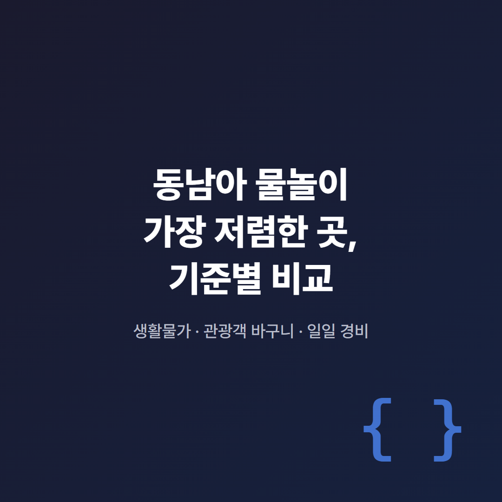
위 그림이 이 글의 지도예요. 거주자 생활물가, 관광객 바구니, 1인 일일 경비. 이 세 가지 잣대를 차례로 볼 거예요.
가장 저렴한 곳, 하나만 꼽을 수 있나요?
꼽을 수 없어요. 동남아 물놀이 비용을 다룬 자료들이 서로 다른 것을 재고 있기 때문입니다.
하나는 현지 거주자의 생활물가 지수예요. 또 하나는 영국 환전업체가 관광객 필수 품목 10개를 담아 계산한 바구니 비용(영국 파운드 기준)이고, 마지막은 백패커·중급·고급으로 나눈 1인 하루 경비 구간(미국 달러 기준)입니다.
단위도 다르고 대상도 달라요. 국가 단위로 낸 자료가 있고, 도시 단위로 낸 자료가 있어요.
자료끼리 순위도 엇갈려요. 그래서 한쪽 손을 들어 주지 않고 양쪽을 다 적을게요.
물가 지수로 보면 어느 나라가 낮나요?
Numbeo의 2026년 동남아 국가별 생활물가 지수에서는 인도네시아(26.1)와 베트남(26.4)이 가장 낮아요. 필리핀 30.1, 말레이시아 34.0, 캄보디아 34.8, 태국 38.0 순으로 올라갑니다. 임대는 뺀 지수예요.
외식 지수만 따로 보면 인도네시아 15.3, 베트남 15.6, 필리핀 19.7이 낮은 쪽이에요. 라오스는 이 표에 없습니다.
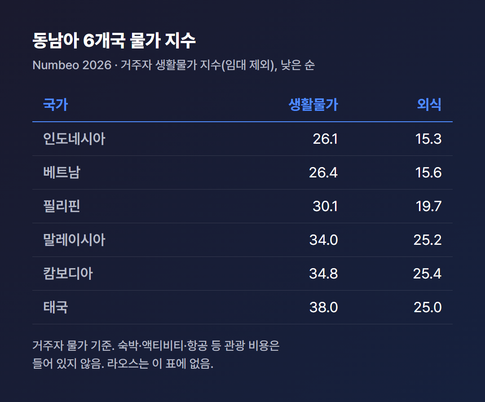
이 지수는 거주자가 사는 데 드는 물가를 본 거예요. (이게 중요해요.) 숙박, 액티비티, 항공 같은 관광 비용은 들어 있지 않습니다.
Numbeo는 사용자가 제출한 데이터를 모은 생활물가 DB예요. 지수의 기준점이 페이지에 명시돼 있지 않아서, 기준이 무엇인지는 단정하지 않을게요.
물가가 낮은 나라가 곧 여행하기 싼 나라인 게 아니라, 거주자의 장바구니가 가벼운 나라일 뿐일 수 있어요. 그래서 동남아 물놀이 경비를 가늠할 때 이 숫자는 출발점으로만 쓰는 게 맞아 보여요.
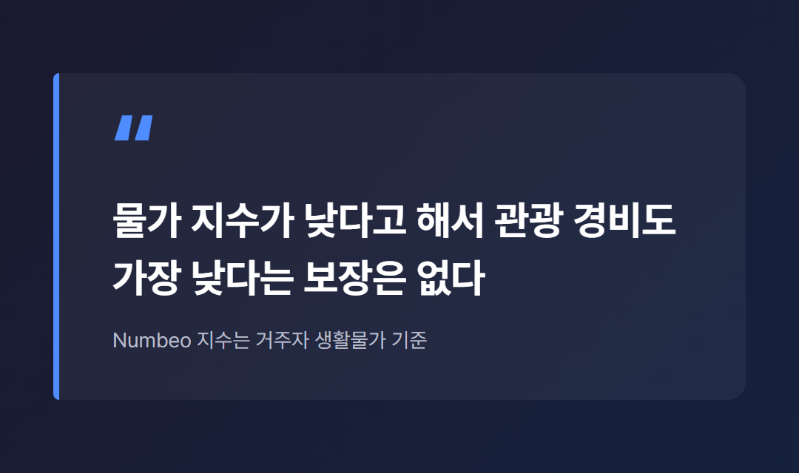
동남아 물놀이 경비는 자료마다 순위가 다른가요?
달라져요. 관광객 바구니 비용에서는 베트남 호이안이 앞섰고, 1인 하루 경비 구간에서는 캄보디아와 말레이시아의 아래쪽 값이 낮게 나온 자료가 있어요.
먼저 바구니 비용이에요. 영국 Post Office Travel Money의 2025년 장거리 휴가지 조사를 업계 매체 트래블몰이 2025년 10월 2일에 보도했어요. 3코스 저녁 2인과 음료 등 관광객 필수 10개 품목을 담은 바구니 값을 비교한 조사입니다.
베트남 호이안이 £58.81로 1위, 2위는 케이프타운 £64.28, 5위는 도쿄 £68.61이었어요. 푸켓(태국)과 페낭(말레이시아)은 10위권에 새로 들어왔고요.
발리는 3위 £67.79, 푸켓은 £87.82예요. 이 두 값은 보고서 본문을 열어 보지 못하고 검색 요약으로만 확인했어요. 발리는 현지 가격이 올랐지만 루피아 약세가 상쇄했다고 보도됐습니다.
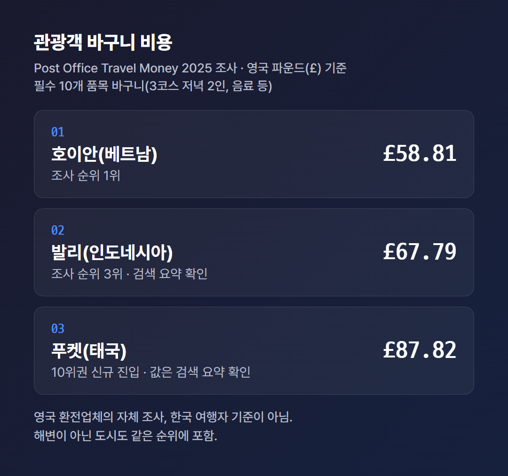
이 조사는 영국 환전업체의 자체 조사라서 파운드 기준이고, 한국 여행자 기준이 아니에요. 순위에는 케이프타운, 도쿄처럼 해변 여행지가 아닌 도시도 섞여 있어요. 필리핀 지역은 상위권에서 확인하지 못했습니다.
다음은 독립 가이드 사이트 Day Trips Vietnam이 2026년 5월 기준으로 낸 1인 1일 경비 구간이에요. 숙박·식사·교통·액티비티를 포함한 금액이고, 환율은 5월 중순 기준이라고 밝혀 뒀어요. 이 사이트는 중급과 고급 구간도 내놓는데, 여기서는 백패커 구간만 옮겼어요.
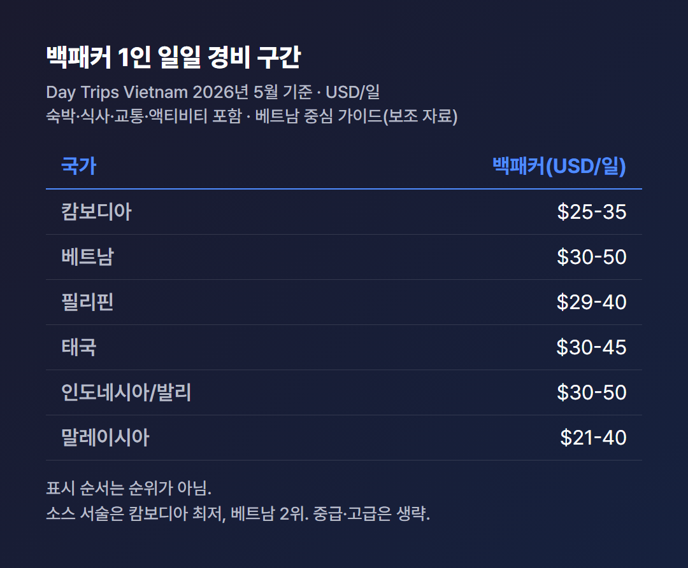
구간의 아래쪽 값만 보면 말레이시아 $21이 가장 낮고, 캄보디아 $25와 필리핀 $29가 뒤를 잇습니다. 그런데 이 자료의 서술은 캄보디아를 동남아에서 가장 저렴한 곳, 베트남을 두 번째로 적었어요. 표의 아래쪽 값과 글의 서술이 가리키는 방향이 조금 달라서 둘 다 적어 둡니다.
베트남을 중심으로 다루는 가이드 사이트라서 베트남에 유리하게 쓰였을 가능성도 있어요. 그래서 저는 보조 자료로만 봤어요.
동남아 물놀이 비용 자료를 정리하면 이래요. Numbeo에서는 캄보디아가 베트남보다 높고, Day Trips Vietnam은 캄보디아를 베트남 앞에 놓아요. Post Office는 호이안을 맨 앞에 세웠고, 발리가 3위, 푸켓은 그보다 높은 £87.82였어요.
누가 틀린 게 아니라 각자 다른 걸 잰 거예요.
동남아 물놀이 경비에는 환율도 변수예요. 트래블타임즈의 2026년 초 전망 기사는 달러·원 환율이 1,500원 수준까지 올랐고, 바트·동·페소 같은 동남아 통화도 함께 올랐다고 썼어요. 태국 바트는 최근 1년간 원화 대비 약 11% 올랐다고 하고요. (환율 얘기는 어디 가나 빠지질 않네요.)
같은 기사는 푸꾸옥을 신규 호텔 공급이 늘어난 ‘가성비 해변’으로 부상하는 목적지로 소개했어요. 다만 실제 숙박비 같은 가격은 확인하지 못했습니다.
TODO: 직접 경험 넣기 - 실제로 다녀온 물놀이 여행지가 있다면 항공·숙박·식비·액티비티에 쓴 금액과 다녀온 계절
동남아 물놀이 입국 조건과 계절은요?
한국 일반여권 기준으로 태국과 말레이시아는 90일, 베트남은 45일, 필리핀과 라오스는 30일 무비자예요. 인도네시아는 도착비자를 받고, 캄보디아는 비자가 필요합니다. 모두 외교부 기준이에요.
국가
조건
태국
90일 무비자. 2025년 5월 1일부터 입국 3일 전 온라인 도착카드(TDAC) 작성
베트남
45일 무비자(1회 입국). 관광 목적이면 귀국 항공권 필요
필리핀
30일 무비자(연장 가능)
인도네시아
도착비자 30일(1회 30일 연장 가능), 비용 IDR 500,000. 전자 사전 신청 가능
말레이시아
90일 무비자(왕복권, 여권 유효기간 6개월 이상 필요). 디지털 입국카드(MDAC) 필수
라오스
30일 무비자(연장 불가)
캄보디아
사증면제 목록에 일반여권 항목 없음. 공항 도착비자 가능, 전자입국신고(e-Arrival) 필수
푸꾸옥은 자료가 엇갈려요. 위키백과는 2014년 3월부터 30일 무비자라고 적었고, 외교부는 베트남 45일 무비자를 안내해요. 위키백과 서술이 오래된 내용으로 보여서 외교부를 따르되, 충돌이 있다는 점은 밝혀 둡니다.
입국 조건은 수시로 바뀌어요. 출발 전에 외교부 해외안전여행(0404.go.kr)에서 다시 확인해 보시면 좋겠어요. 캄보디아 비자 비용은 공식 자료로 확인하지 못했습니다.
동남아 물놀이 계절은 확인된 범위만 적을게요. 위키백과 자료는 보조로 봐 주세요.
필리핀: 우기는 6~10월이고 태풍 위험이 있어요(외교부).
푸꾸옥: 우기는 4~11월, 건기는 12~3월이에요. 건기에도 비가 조금 와요(위키백과).
인도네시아: 건기 4~9월, 우기 10~3월이고 지역 차이가 커요(위키백과).
태국: 안다만 해안은 연 강수량이 약 4,015mm로, 타이만 서안(600~850mm)보다 훨씬 많아요(위키백과).
나트랑, 보라카이, 세부, 발리 같은 곳의 구체적인 물놀이 적기는 믿을 만한 자료를 찾지 못했어요. 해변의 수질과 시야, 워터파크 입장료도 마찬가지예요. 항공권 가격, 비행시간, 직항 노선 목록도 확인하지 못했고요.
모르는 걸 아는 척하느니, 모른다고 적는 쪽이 낫겠다 싶었어요.
접근성에서 확인한 건 하나예요. 트래블타임즈는 2026년 초 기사에서 필리핀은 세부 노선이 줄었고 보홀 외 지역은 어렵다는 여행사 평가가 나왔다고 전했어요.
라오스는 바다가 없어요. 방비엥 블루라군, 루앙프라방 꽝시폭포 같은 민물 물놀이 장소가 외교부 안전 안내에 언급됩니다. 라오스는 앞의 두 비용 표에 없어서 비용 비교는 못 했어요.
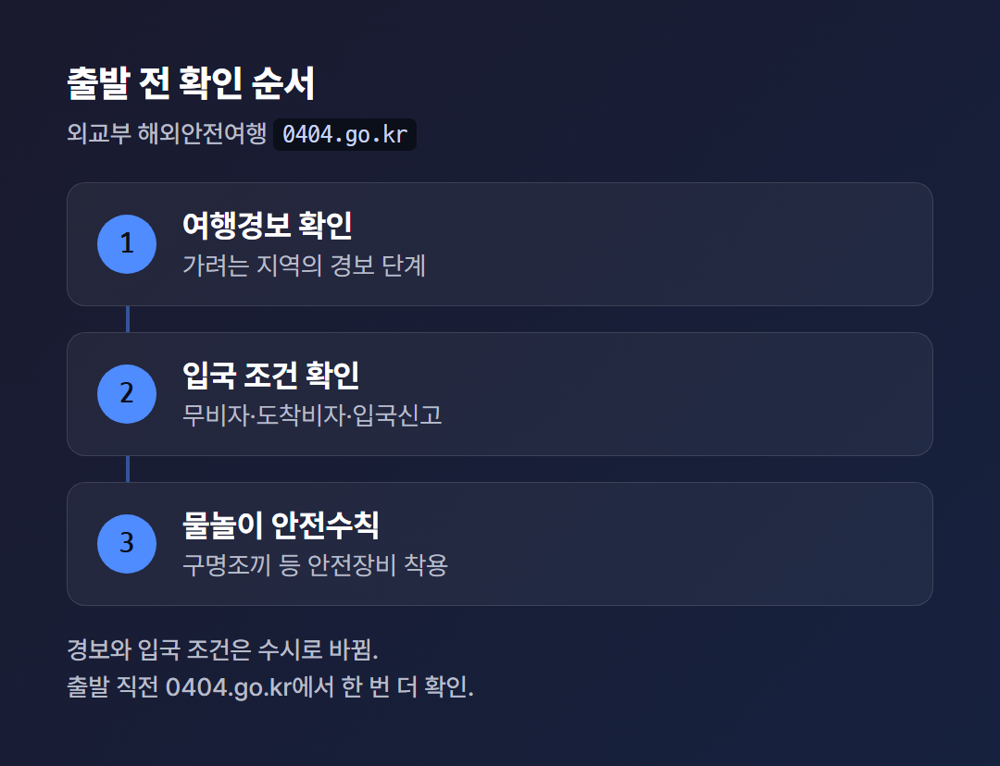
경보와 입국 조건은 바뀌니까, 출발 직전에 이 확인을 한 번 더 하면 좋겠어요.
동남아 물놀이 안전은 어떻게 봐야 하나요?
외교부 안내에 물놀이·해양 사고 주의가 올라온 곳이 여러 나라예요. 공통된 권고는 구명조끼 같은 안전장비 착용입니다.
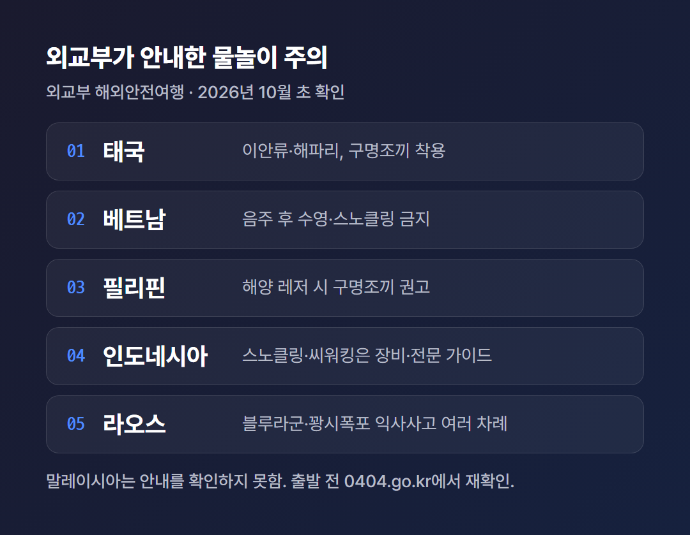
태국: 파도가 갑자기 높아질 수 있고 이안류가 익사 위험이 돼요. 안전요원이 없는 해변이 많아 구명조끼를 입으라고 안내해요. 해파리 쏘임이 있고, 구명장비 없이 스노클링하다 사망한 사례가 기록돼 있어요. 외진 해변은 피하라고 권고합니다.
베트남: 리조트·해변에서 물놀이 중 다치거나 익사하는 사고가 종종 나요. 음주 후 수영·스쿠버·스노클링은 하지 말라고 하고, 나트랑·푸꾸옥·무이네 같은 해안 관광지에서 안전수칙을 지키라고 해요.
필리핀: 스노클링·제트스키 등 해양 레저 중 안전사고가 자주 나서 구명조끼 착용이 권고돼요. 선박사고가 잦아 여객선 이용 주의 공지도 나와 있어요.
인도네시아: 스노클링·씨워킹은 안전장비와 전문 가이드가 필요해요.
라오스: 블루라군, 꽝시폭포 등에서 익사사고가 여러 차례 있었어요. 튜빙·카약·수영 때 안전장비 착용이 최선이고 의료 인프라가 약하다고 해요.
말레이시아: 물놀이 안전 안내는 확인하지 못했어요.
푸꾸옥에서는 2026년 7월 11일 관광객 36명이 탄 선박이 높은 파도와 바람 속에 전복돼 15명이 숨졌다는 보도가 있었어요. 한국인은 없었다고 해요. 당국은 운영사와 선박이 허가·안전기준을 충족했다고 밝혔고요.
저는 이 보도를 해상 이동이나 투어가 날씨의 영향을 받는다는 사례로 읽었어요. 사고 원인을 판단할 만한 자료는 없습니다.
여행경보도 짚어 둘게요. 이 글을 정리한 2026년 10월 초에 확인한 외교부 안내로는 베트남이 1단계(여행유의)예요. 필리핀의 보라카이, 보홀, 세부 막탄, 시아르가오는 1단계로 표시돼 있어요.
캄보디아는 2025년 12월 4일 조정 기준으로 시아누크빌이 3단계(철수권고)이고, 꼬콩을 포함한 7개 주가 특별여행주의보 지역이에요. 해변 지역이 포함돼 있어서 이 글에서는 물놀이 후보로 다루지 않았습니다.
태국의 푸켓·끄라비 단계는 확인하지 못했고, 인도네시아·라오스·말레이시아 일반 지역도 단계를 확정하지 못했어요. 경보는 수시로 바뀌니 출발 전 0404.go.kr에서 다시 확인해 보시면 좋겠어요.
건강 소식도 하나 있어요. 질병관리청은 2026년 7월 29일 휴가철 동남아(베트남·태국·필리핀·인도네시아·말레이시아)의 뎅기열, 치쿤구니야열, 지카바이러스 같은 모기 매개 감염병과 홍역에 주의를 당부했어요. 홍역 예방접종 여부를 확인하고, 곤충 기피제를 3~4시간마다 쓰고, 밝은색 긴팔·긴바지를 입으라고 권고했습니다.
물속 수질이나 해양 감염에 관한 공공기관 자료는 찾지 못했어요.
TODO: 직접 경험 넣기 - 물놀이를 해 봤다면 안전요원·구명조끼 대여 여부 등 현장에서 직접 본 것
그래서 어디로 갈까요?
정답 대신 질문을 하나 드릴게요. 이번 동남아 물놀이 여행지를 고를 때, 여러분은 무엇을 가장 아끼고 싶으세요? 항공권인가요, 숙박인가요, 하루 식비인가요?
아끼고 싶은 항목이 정해지면 어느 자료를 볼지도 정해져요. 생활물가는 인도네시아와 베트남이, 관광객 바구니는 호이안이, 하루 경비 구간은 캄보디아와 말레이시아가 눈에 띄었지만, 이건 기준이 다른 숫자였어요.
싸다는 말은
누가, 무엇을, 어떻게 쟀느냐에 따라
다른 얼굴을 하더라고요.
숫자는 바뀌어도 이 질문은 오래 쓸 수 있을 거예요. 다들 안전하게, 시원하게 놀고 오시면 좋겠어요. 진짜로요.
2026년 5월을 기준일로 쓴 글이다. 일부 소스는 그 이후(2026년 7월, 9월)에 발행·갱신되어 날짜를 따로 적었다. 부모의 대화법은 한국 기관이 아니라 미국 기관·전문가의 권고를 전한다. 진단이나 치료를 말하는 글이 아니다.
“학교에서 우리 아이가 늘 혼자라는데, 부모인 나는 무엇을 해줘야 할까요?”
학교에서 혼자인 자녀를 둔 부모라면 한 번쯤 품어 봄 직한 질문이다. 나는 이 질문에 정답을 갖고 있지 않다. 이 글이 의지하는 것은 확인된 소스와 그 범위뿐이다.
소스가 말하는 것은 말하고, 말하지 않는 것은 말하지 않겠다. 어디까지가 확인된 내용인지도 같이 적겠다.
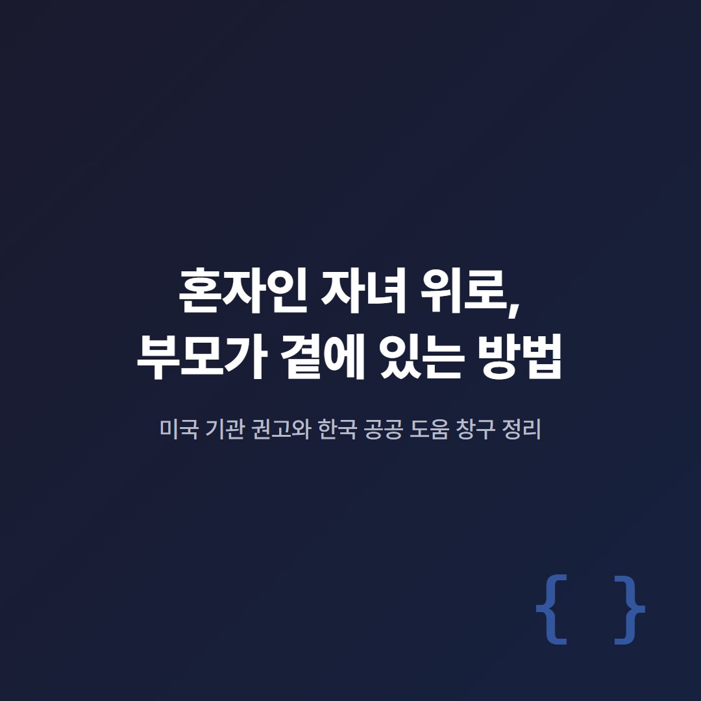
대표 이미지에 적은 대로, 이 글은 부모의 대화·반응 방법(미국 기관 권고)과 한국에서 확인되는 도움 창구를 나누어 정리한다.
혼자 있는 것과 외로운 것은 같을까?
같지 않다. WHO(2025년 6월 30일)는 외로움을 원하거나 필요한 사회적 연결과 실제 연결 사이의 격차에서 오는 주관적이고 고통스러운 감정이라고 설명한다. 사회적 고립은 관계·역할·상호작용이 너무 적은 객관적 상태라고 구분한다.
그러니 혼자인 자녀의 마음을 쉬는 시간의 모습만으로 알 수는 없다. 혼자라는 것은 눈에 보이는 상태이고, 외로움은 아이 안에 있는 감정이다.
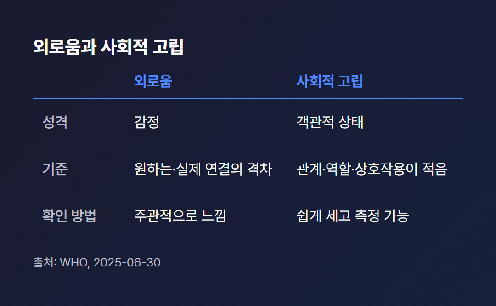
표처럼 외로움은 아이가 어떻게 느끼는지의 문제이고, 고립은 관계가 얼마나 있는지의 문제다. 혼자인 자녀가 어느 쪽에 가까운지는 아이에게 물어야 알 수 있다.
그렇다면 친구가 몇 명이어야 안심할 수 있을까? 토론토 메트로폴리탄대의 라이언 페르삼(Ryan J. Persram)은 학자의 해설(The Conversation, 2026년 9월 3일)에서 질 높은 우정이 사회·정서적 어려움의 완충이 될 수 있다고 쓴다. 친구가 많을수록 불안 증상이 적은 것은 질 높은 우정을 하나라도 가질 확률이 커지기 때문일 가능성이 있다고도 한다.
이 글은 단일 원저 연구가 아니라 종합 해설이다. 우정의 수가 전혀 무관하다는 주장도 아니다.
한국의 수치도 있다. 교육정책 웹진(KEDI, 2024년 2월 21일)은 통계청 국가승인통계인 아동청소년 인권실태조사를 인용해, 이유 없이 외로웠던 경험이 거의 3명 중 1명이라고 서술한다. 관계망과 외로움 문항은 2023년에 처음 추가되었다고 한다.
같은 웹진에 따르면 코로나19 이후 초·중학생의 외로움 경험 비율이 높아졌고, 초등학생에서 두드러졌다. 고립은 두 갈래로 나뉘어, 관계망이 부족한 외부적 고립이 9.5%, 스스로 고립되었다고 느끼는 인지 고립이 13.9%, 항상 고립되었다고 느끼는 경우가 1.4%였다.
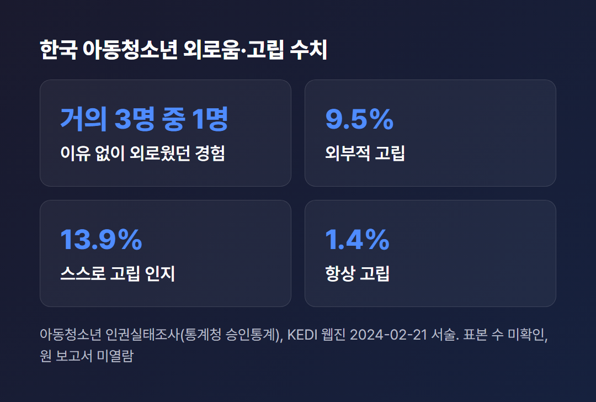
이 수치에는 한계가 있다. 나는 웹진의 서술만 읽었고 원 보고서는 열람하지 못했다. 표본 수와 응답 방식도 확인하지 못했다.
그러니 이 수치로 개별 아이의 사정을 알 수는 없다. 외로움이 국가 통계에 따로 잡힐 만큼 다뤄지는 주제라는 정도만 확인된다.
WHO는 전 세계 기준으로 청소년·청년의 외로움 비율이 약 21%로 연령대 중 가장 높고, 연령이 오르면 대체로 낮아진다고 한다. 한국 고등학생만의 수치는 확인하지 못했다.
혼자인 자녀가 말하지 않을 때 부모는 무엇을 할까?
소스가 먼저 권하는 것은 해결이 아니라 들을 공간이다. 미국 Child Mind Institute(2026년 7월 2일 갱신)는 아이가 그냥 이야기하도록 먼저 공간을 주라고 한다. 문제 해결에 들어가기 전에 들어야 실제 문제를 알 수 있다는 것이다.
한국 공공기관이 제시한 부모의 구체적 대화 지침은 확인하지 못했다. 아래는 미국 기관·전문가의 권고이고, 한국 기관의 권고가 아니다.
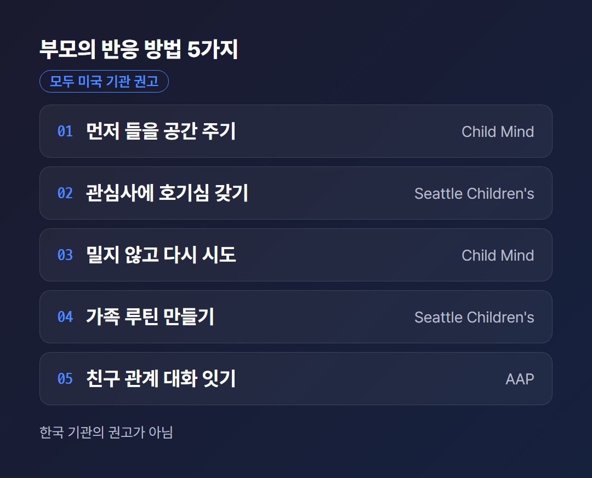
카드의 내용을 소스별로 풀어 쓰면 다음과 같다.
Child Mind: 열린 질문을 하고, 행동의 변화는 질문 대신 관찰로 말한다. 아이의 말을 반영하는 예시로 “It sounds like you're having a hard time”, 지지하는 말의 예시로 “That sounds tough. Would you tell me more about that?”를 든다. 두 문장은 소스의 예시다.
Child Mind: 아이가 말하기를 꺼리면 밀어붙이지 말고 하루나 이틀 뒤에 다시 시도한다.
Seattle Children's(2025년 11월 24일): 아이가 좋아하는 것에 호기심을 갖고 질문하고, 들은 뒤 인정하는 말로 반응한다. 소스의 예시는 “I can see why you like that. Thanks for showing me.”이며, 편안한 시간에 가볍게 하라고 한다.
Seattle Children's: 식사, 게임의 밤, 취침 전 루틴 같은 가족 루틴이 안정감과 소속감을 준다고 한다.
AAP(미국소아과학회, 2022년 4월 7일): 아이가 친구 관계를 스스로 해결해야 한다고 여기지 않도록 대화를 이어가라고 한다. 아이마다 성격과 사회적 어려움이 달라 맞춤 코칭이 필요하다고 한다. 혼자인 자녀에게도 같은 말이 적용될 것이다.
AAP는 학령기 아이에게는 친구를 집에 초대하고, 학교·활동 행사에 참석해 또래 관계를 지켜보고, 갈등 상황에서 감정에 이름을 붙이도록 돕는 방법도 권한다. 이 자료는 2022년 발행이라 기준일보다 오래되었다.
Child Mind는 아이의 상황에 따라 접근이 다르다고도 쓴다. 환경이 아이에게 맞지 않는 경우에는 아이의 관심사에 맞는 활동이나 모임을 찾아보라고 한다.
TODO: 직접 경험 넣기 - 아이가 말을 꺼내지 않던 때 곁에서 어떻게 했는지, 또는 내가 학창 시절 혼자였던 때 어떤 말이 위로가 되었는지·되지 않았는지
혼자인 자녀를 위로하다 부담을 주는 반응은?
소스들이 겹치게 꼽는 것은 곧바로 해결 모드로 넘어가는 반응과 아이의 감정을 줄여 말하는 반응이다. 위로하려면 아이 마음을 알아야 한다. 그러려면 들어야 하고, 듣는 일에는 시간이 걸린다.
Child Mind(2026년 7월 2일)는 곧바로 문제 해결로 넘어가는 것, 과한 동정이나 감정 표현으로 반응하는 것을 피하라고 한다. 같은 기관의 거절 경험 글(2026년 1월 13일 검토)은 선의라도 실망을 축소하지 말라고 한다. 이 글은 거절이라는 일반 맥락이다.
AAP의 청소년 대상 글(2024년 8월 7일)은 판단과 즉각적인 반응, 이른바 “parent alarm”을 경계한다. 사안을 실제보다 크게 만드는 파국화는 아이를 더 불안하게 해 아이가 돌아오지 않게 된다고 설명한다. 훈계도 청소년이 잘 받아들이지 못한다고 한다.
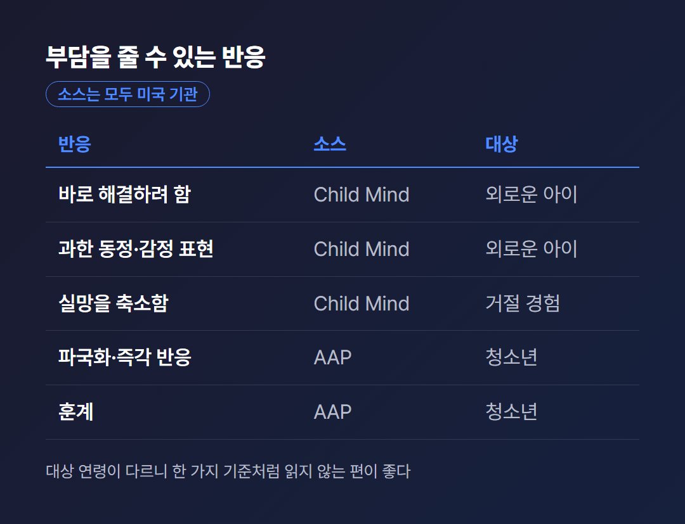
표의 소스는 모두 미국 기관이다. 대상 연령이 다르니 한 가지 기준처럼 읽지 않는 편이 좋다.
그런데 권고가 서로 다른 결로 읽히는 지점이 있다. 한쪽은 타당화, 즉 아이의 감정을 인정하는 일을 강조한다. Child Mind는 아이가 이해받는다고 느끼는 것을 중시하고, Seattle Children's도 관심 있는 질문과 인정하는 말을 권한다.
다른 쪽은 과한 공감을 경계한다. AAP는 청소년과의 대화에서 과하게 공감하지 말고 들어주는 상대, 곧 “sounding board”가 되라고 한다. Child Mind도 과한 동정이 감정을 악화시킬 수 있다고 쓴다.
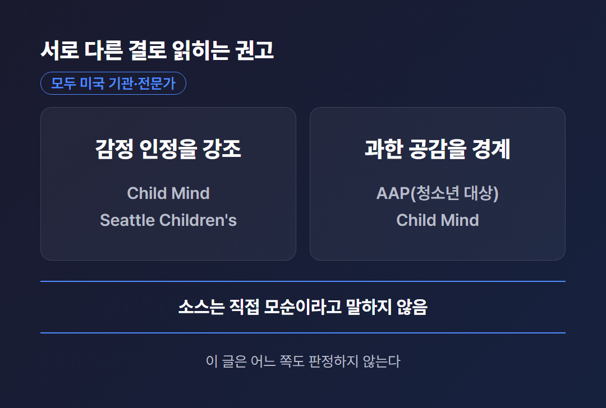
소스가 두 입장을 직접 모순이라고 말하지는 않는다. 대상 연령이나 정도의 차이일 수 있으나 그것은 소스에 없는 해석이므로, 나는 어느 쪽도 판정하지 않는다.
말을 시작하는 방식에서도 결이 다르다. Child Mind는 부모가 자신의 외로웠던 경험을 먼저 나누어 아이가 감정을 꺼낼 문을 열라고 한다. 같은 글은 아이의 이야기에 먼저 공간을 주라고도 하고, AAP는 부모의 말보다 듣기가 중요하다고 한다. 우선순위는 이 글에서 정하지 않는다.
그렇다면 부모는 무엇을 고르면 될까? 정답은 소스에 없다. 아이의 반응을 보며 그대가 조정하는 수밖에 없다.
따돌림이 의심되면 어디에 알릴까?
혼자인 것과 따돌림은 다른 개념이다. 따돌림은 법적으로 학교폭력의 한 유형이다. 찾기쉬운 생활법령정보는 2명 이상의 학생이 특정인을 지속적이거나 반복적으로 신체적·심리적으로 공격해 고통을 느끼게 하는 행위라고 정의한다. 의심이 들면 아래의 공공 창구가 확인된다.
아이의 혼자임이 따돌림 때문인지 가려내는 방법은 소스가 직접 제시하지 않는다. 생활법령정보의 피해학생 징후 안내는 법적 해석의 근거가 아니라는 단서가 붙어 있다.
가정에서 보일 수 있는 징후로는 표정이 어둡고 기운이 없음, 학교 가기를 싫어하거나 두려워함, 이유 없는 결석이나 전학 요청, 신체의 상처나 멍이 자주 보임이 있다. 학교에서는 모둠 활동에서 소외·배제됨, 쉬는 시간과 점심시간에 혼자만의 공간을 찾음, 소지품 분실과 의류 손상이 늘어남이 꼽힌다.
사이버 공간에서는 불안한 기색으로 기기를 자주 확인하거나 단체 채팅에서 반복적으로 공격받는 모습이 있다.
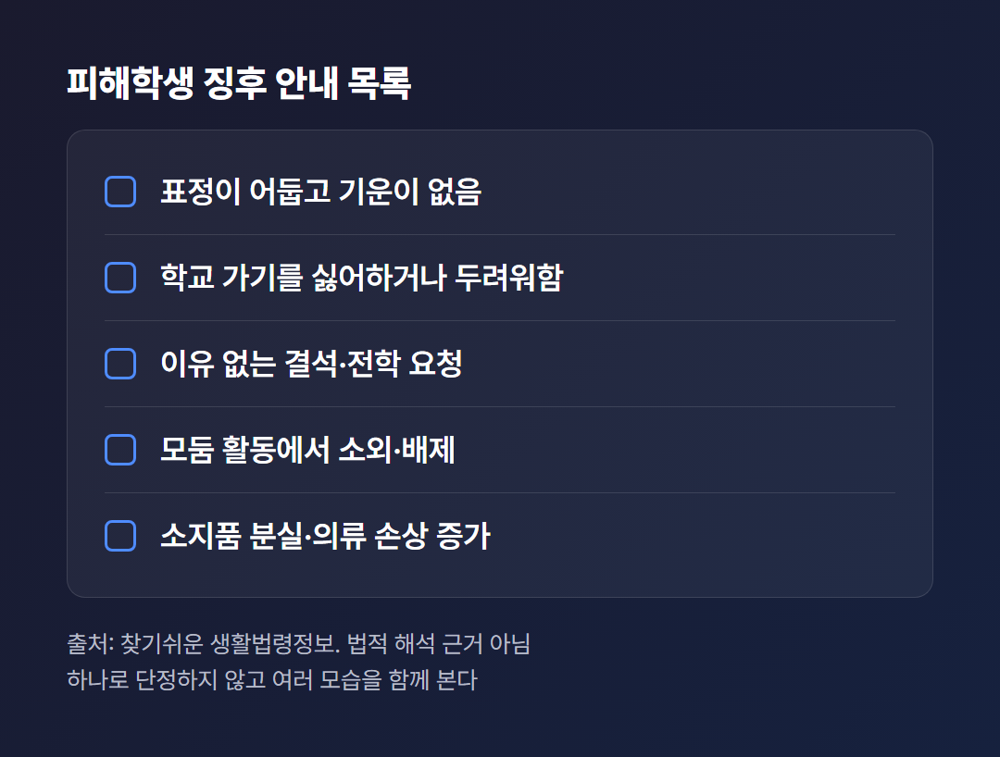
이 목록에는 단순히 혼자 있는 아이와 겹쳐 보일 수 있는 항목도 있다. 쉬는 시간에 혼자만의 공간을 찾는 것이 그렇다. 소스는 이 겹침을 따로 설명하지 않는다. 그러니 하나의 징후로 단정하지 않고 여러 모습을 함께 본다는 것이 이 글의 한계 안에서 말할 수 있는 전부다.
도움 창구는 다음과 같다. 모두 공공기관 소스에서 확인된 내용이다.
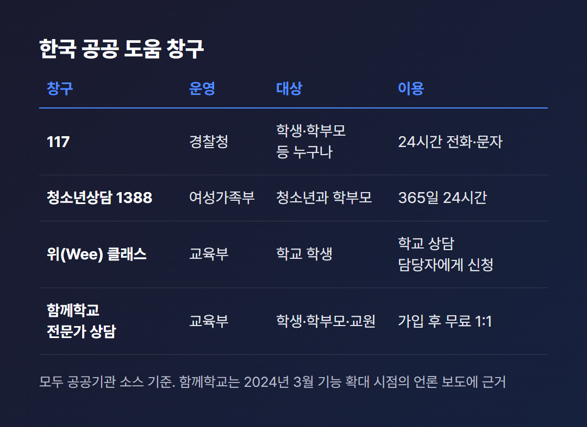
117 학교폭력 신고: 경찰청 청소년보호과가 운영한다(정부24 안내). 피해를 입었거나 상담을 원하는 학생·학부모 등 누구나, 24시간 이용한다. 같은 안내가 전화를 117 또는 182(국번 없음)로 함께 적는다. 두 표기의 관계는 확인하지 못했다. 문자는 #0117, 온라인은 안전Dream(www.safe182.go.kr)이다.
청소년상담 1388: 여성가족부가 운영하며(정책브리핑 2025년 3월 17일), 9~24세 청소년과 학부모·보호자가 이용할 수 있다. 친구, 가족, 학교폭력 등을 상담하고 365일 24시간 운영한다. 생명 안전이 위협받는 경우를 제외하고 상담 내용은 비밀이 보장된다. 전화는 지역번호+1388, 문자는 1388, 카카오톡은 '청소년상담1388'이다.
위(Wee) 클래스: 교육부 사업으로 학교의 전문상담교사나 전문상담사 등에게 신청한다. 따돌림과 대인관계 미숙 같은 문제를 다루며, 위기 학생뿐 아니라 일반 학생도 신청할 수 있고 별도 서류는 필요 없다.
함께학교 전문가 상담: 가입한 학생·학부모·교원이 마음건강 등 분야별 전문가에게 무료·비공개로 1:1 상담을 받는다. 담임교사에게 묻기 어려운 것을 질문하는 '답·답해·요' 코너도 있다. 이 내용은 2024년 3월 기능 확대 시점의 언론 보도에 근거한다.
학교와 어떻게 소통할지는 한국 공공기관의 상세한 안내를 확인하지 못했다. 학교폭력 맥락에서 피해학생 부모가 담임교사를 만나 해결방안을 상의하도록 안내된다는 서술을 검색 결과에서 보았을 뿐이고, 해당 페이지 본문에서 직접 읽은 것은 징후 목록까지다.
전문가의 도움이 필요한 신호도 미국 소스 위주로만 확인된다. Seattle Children's는 아이가 매우 슬프거나 위축된 모습이 2주 이상 이어지면 아이의 의사에게 연락하라고 안내한다. Child Mind는 지속적인 위축과 방에서 나오기를 꺼리는 모습 등을 들고 아동 정신건강 임상가와의 상담이 중요하다고 쓴다.
한국 공공기관의 기간 기준은 확인하지 못했다. 이 글은 진단이나 치료를 안내하지 않는다. 출발점으로 안내된 창구는 위 클래스, 1388, 함께학교다.
부모의 공감은 학교생활과 어떤 관련이 있을까?
일부 한국 연구가 관련을 보여주지만, 부모가 이렇게 하면 외로움이 줄어든다는 인과 근거로 쓸 수는 없다. 두 연구 모두 설문에 기반한 상관·매개 분석이다. 외로움을 직접 다룬 한국 논문은 목록만 확인했고 본문을 열람하지 못했다.
서울 소재 두 학교의 중학생 707명을 설문한 연구(2021년 10월)에서는 부모의 공감적 정서 반응이 인지적 유연성 통제를 거쳐 학교생활적응과 유의하게 연결되었다. 과도한 정서 반응은 주로 인지적 유연성 통제를 통해 영향을 주었고, 자기개념 명확성과 함께 작용하는 경로도 나타났다.
다문화청소년패널 1,812명을 종단 분석한 연구(노성향, 2025년)에서는 부모지지가 자아존중감을 거쳐 학교생활만족도에 영향을 주었다. 대상이 다문화청소년이라 일반화에는 한계가 있다.
그러면 부모 자신의 마음은 어떨까? 부모의 죄책감을 다룬 신뢰할 만한 소스는 찾지 못했다. 이 글의 어떤 권고도 부모를 탓하려는 것이 아니다.
Child Mind(2025년 8월 27일)는 자녀의 불안을 키우지 않으려면 부모가 자기 불안을 다루는 법을 제시한다. 복식호흡과 점진적 근육 이완, 불안을 키우는 상황 파악, 차분할 때 자신의 감정 반응을 아이에게 설명하기, 필요하면 잠시 물러나기, 치료사·배우자·친구·지지 모임과 연결하기다. 다만 이 글은 자녀의 불안 맥락이고, 친구 없는 자녀에 대한 글이 아니다.
학교에서 혼자인 자녀 곁에서 부모가 할 수 있는 일은, 확인된 범위에서는 말을 잘하는 기술이 아니라 들을 시간을 내는 쪽에 가까워 보인다. 그렇다고 그것이 아이의 학교생활을 바꾼다고 말할 근거는 이 글에 없다.
이 글의 권고 대부분은 미국 소스이고, 어느 집에나 맞지는 않을 것이다. 아이를 가장 잘 아는 사람은 그대다. 다른 길을 찾아도 좋다.
오늘 저녁, 혼자인 자녀가 하고 싶은 말이 있다면 그대는 어떤 표정으로 그 이야기를 들을 수 있을까? 답은 소스가 아니라 그대의 집에 있을 것이다.
TODO: 직접 경험 넣기 - 마무리에 쓸 수 있는 내 경험(아이와 마주 앉아 이야기를 들었던 순간 등). 없으면 이 줄을 지운다
2026년 10월 기준으로 쓴 글이다. 한국 통계 일부는 발행일을 확인하지 못한 웹진에 기대고 있고, 효과 연구 한 편은 동료심사 전 프리프린트다. 진단이나 치료를 말하는 글이 아니며, 방법마다 근거 소스의 성격을 함께 적었다.
“친구가 없을 때, 학교에서는 어떻게 지내야 하나요?”
이런 질문을 품은 학생이 있을 것이다. 그 곁에서 같은 질문을 속으로 삼키는 부모와 교사도 있을 것이다.
이 글은 하나의 흐름으로 간다. 먼저 외로움이 무엇인지 보고, 통계를 보고, 따돌림과의 구분을 짚는다. 그다음 학생, 부모, 교사에게 차례로 말을 건넨다. 학생에게는 ‘그대’라고 부르고, 어른에게는 ‘부모와 교사 분들’이라고 부르겠다.
공공기관, 국제기구, 연구 자료에 적힌 것만 옮겼다. 자료에 없는 요령은 만들지 않았다. 확인하지 못한 것은 확인하지 못했다고 쓴다.
TODO: 직접 경험 넣기 - 학창 시절 친구 문제로 힘들었거나 곁에서 지켜본 경험이 있다면, 감정 없이 사실만 두세 문장
아래 그림은 이 글 전체에서 쓰는 두 개념을 WHO의 구분대로 나란히 놓은 것이다. 설명은 첫 번째 소제목에서 이어진다.
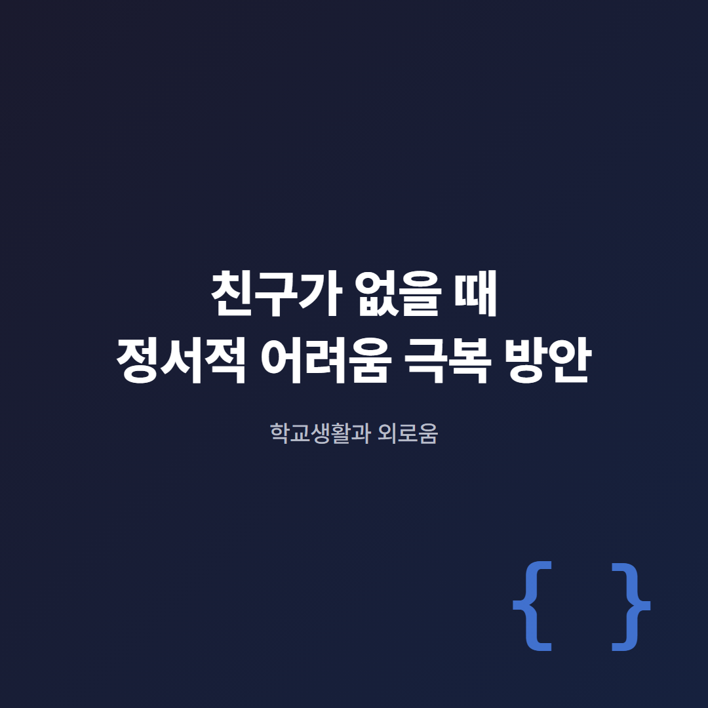
친구가 없으면 곧 외로운 걸까?
곧바로 같다고 보기는 어렵다. WHO는 외로움을 “원하는 연결과 실제 연결 사이 격차에서 오는 주관적이고 고통스러운 감정”으로 정의한다. 사회적 고립은 관계와 역할, 상호작용이 적은 객관적 상태로 따로 구분한다.
외로움은 친구가 몇 명이냐를 세어서 나오는 숫자가 아니라, 바라는 관계와 실제 관계의 간격에서 나오는 감정이다. 이 정의에서 보면 친구가 적어도 바라는 수준과 맞으면 외로움과는 다를 수 있다. 다만 이 해석을 직접 밝힌 문장은 소스에 없고, 정의에서 내가 추론한 것이다.
혼자 있음(solitude)도 외로움과 구분된다. 청소년기(11~19세)를 다룬 학술 리뷰는 혼자 있을 때 화면 시청, 숙제, 음악 듣기를 주로 한다고 정리한다. 이 리뷰에서 자발적으로 택한 혼자 있음은 더 나은 결과와 이어졌다. 강요된 혼자 있음이나 불안한 사회 상황을 피하려는 혼자 있음은 불안과 부정적 정서와 이어졌다.
그러니 친구가 없을 때 중요한 것은 혼자인가 아닌가가 아니라, 왜 혼자인가이다. 연구 용어로 사교를 크게 원하지 않아 혼자인 청소년이 사회적 상황을 피하려는 또래보다 나은 결과를 보였다는 대목도 있다. 한계도 분명하다. 6~9세 아동기를 다룬 연구는 이 리뷰에서 한 편뿐이라, 초등 저학년에 그대로 옮기기는 어렵다.
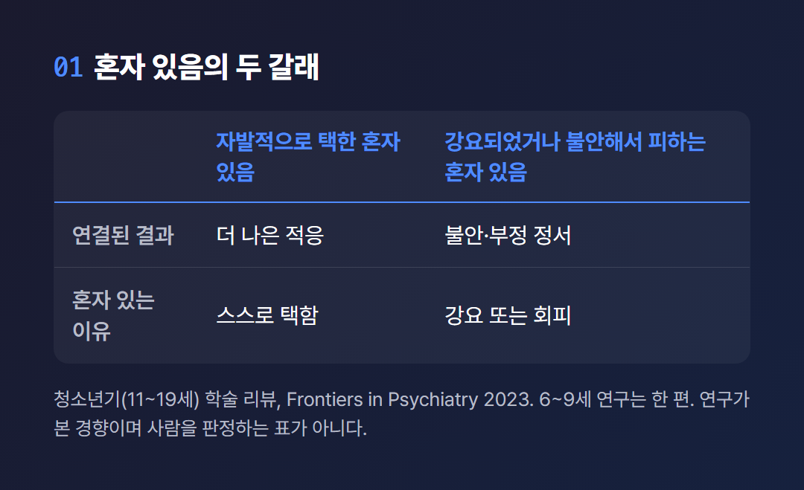
위 표는 그 리뷰의 결과를 두 갈래로 줄인 것이다. 사람의 상태를 판정하는 표가 아니라, 연구가 본 경향을 정리한 표다.
친구의 수와 질은 어떨까? 토론토 메트로폴리탄대 Ryan J. Persram은 2026년 9월 The Conversation에 기존 연구를 종합한 글을 썼다. 높은 질의 우정은 사회·정서적 어려움의 완충이 될 수 있고, 영향도 더 오래 갈 수 있다고 한다.
친구가 많을수록 불안과 우울이 적게 나타나는 현상은, 질 높은 관계가 하나라도 생길 가능성이 커지기 때문일 가능성이 크다고 그는 설명한다. 그렇다고 친구 수가 전혀 무관하다는 말은 아니다. 좋은 우정에도 갈등은 있다. 이 글은 전문가가 쓴 종합 해설이지 단일 원저 연구가 아니라는 점도 밝혀 둔다.
외로움을 겪는 학생은 얼마나 될까?
한국 조사를 인용한 웹진에 따르면 아동청소년 3명 중 1명이 ‘이유 없이 외로웠던 경험’이 있다. 이 수치에는 단서가 붙는다. 조사 주체와 한계를 함께 적는다.
이 웹진은 교육정책네트워크 정보센터(KEDI)에 실린 글이다. 발행일은 확인하지 못했다. 웹진은 해당 조사를 ‘통계청 국가승인통계 아동청소년 인권실태조사’로 서술하고, 사회적 관계망과 외로움 항목은 2023년에 추가되었다고 쓴다. 그런데 여성가족부의 「2025 청소년 통계」 보도자료(2025년 5월 27일 발표)는 같은 조사를 한국청소년정책연구원의 아동·청소년 인권실태조사로 표기한다.
두 표기가 다른 이유를 나는 알 수 없다. 어느 쪽이 맞는지 판정하지 않는다. 원 보고서는 열람하지 못했고, 표본의 상세와 이 수치의 조사 연도도 확인하지 못했다. 인용하려는 분들은 원 보고서를 먼저 확인하기를 권한다.
웹진은 코로나19 이후 초등학생과 중학생의 외로움 경험 비율이 올랐고, 초등학생의 증가 추세가 중고생보다 두드러진다고 해석한다. 고립감을 느끼는 학생 중 4명 중 1명(25.3%)은 그 상태가 2년 이상 이어졌다. 초·중·고를 나란히 비교한 한국 수치는 확인하지 못했다.
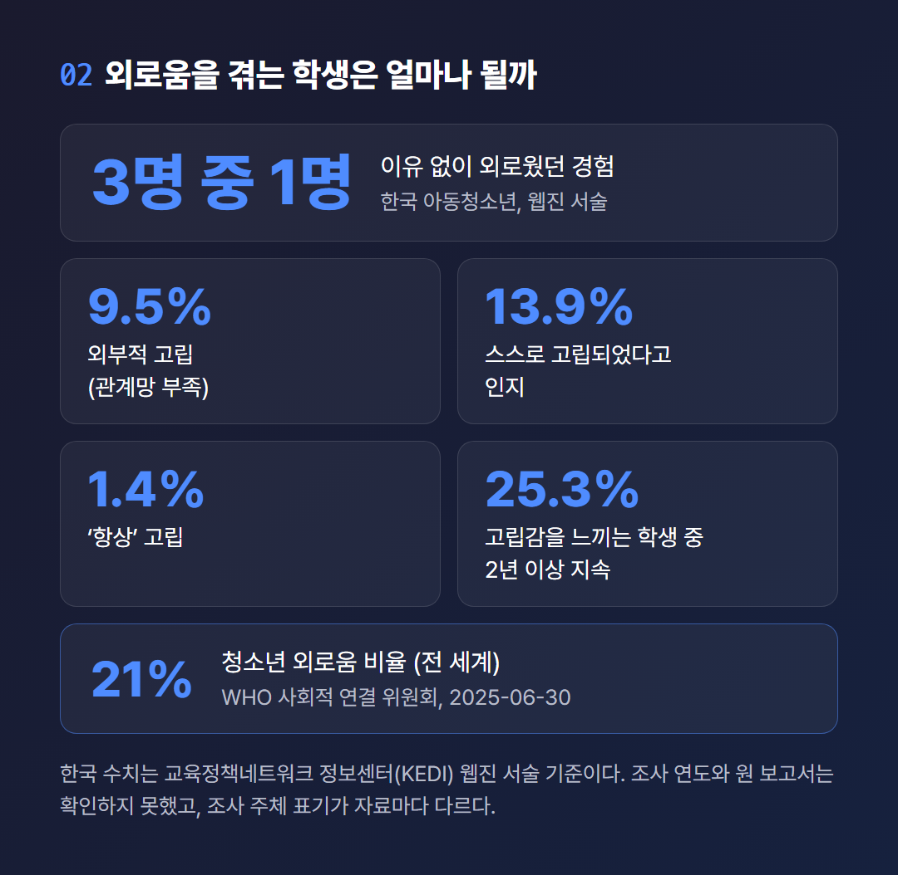
위 카드의 수치는 모두 웹진과 WHO 자료가 적은 그대로다. 외부적 고립 9.5%는 관계망 부족을 가리키며, 웹진 표기상 문항은 “어려운 상황에서 외면하지 않는 사람이 없다”이다. 스스로 고립되었다고 인지하는 내부적 고립은 13.9%, ‘항상’ 고립은 1.4%다.
국제 수치도 있다. WHO 사회적 연결 위원회 보고서(2025년 6월 30일)는 청소년과 청년이 외로움 비율이 가장 높고 나이가 오를수록 대체로 낮아진다고 설명한다. 청소년 비율은 21%다. 연령 구간별 세부 수치는 직접 확인하지 못했다.
외로움은 어디서 오는 걸까? 웹진이 꼽은 영향 요인은 아동기의 부정적 생애경험, 과도한 학업 스트레스와 경쟁, 비대면 관계의 증가와 공동체 변화, 도움을 요청했지만 적절한 지원으로 이어지지 못한 경험이다. 이 목록에는 학생 개인의 성격이 들어 있지 않다. 친구가 없다는 사실을 학생 본인의 결함으로 읽을 근거를 이 자료들에서 찾지 못했다.
외로움이 학교생활에 어떤 영향을 주는지도 짚어 둔다. WHO는 연결감을 느끼는 학생의 학교 성적이 더 낫다고 서술한다. 아동정신건강 기관인 미국 Child Mind Institute는 사회적 어려움을 등교 거부의 유발 요인 중 하나로 설명한다. 외로움과 학업의 관계를 다룬 연구들이 더 있는 듯하나, 본문을 열람하지 못해 쓰지 않는다.
한국청소년정책연구원은 2025년 4월 15일 「고립·은둔 청소년 삶 실태 및 정책 과제」를 발표했다. 이 글이 다루는 범위를 넘는 주제지만, 기초자료 구축과 지원 인프라, 법률·조례 제정을 정책제언으로 담았다는 점만 적어 둔다.
따돌림과 외로움은 어떻게 다를까?
둘은 같은 말이 아니다. 친구가 없을 때의 외로움은 감정 상태이고, 따돌림은 법에 정의된 학교폭력의 한 유형이다. 학생과 곁의 어른 모두에게 해당하는 구분이다.
법제처 생활법령정보에 따르면 학교폭력예방법상 학교폭력에는 따돌림이 포함된다. 둘 이상의 학생이 특정 학생을 지속적이고 반복적으로 신체적·심리적으로 공격해 고통을 주는 행위가 그 내용이다. 외로움은 이 법의 범주에 들지 않는다.
소스가 보여주는 구분의 틀은 이렇다. 하나는 친구가 없거나 외로운 상태다. 다른 하나는 가해 행위가 있는 따돌림이다. 접근도 다르다.
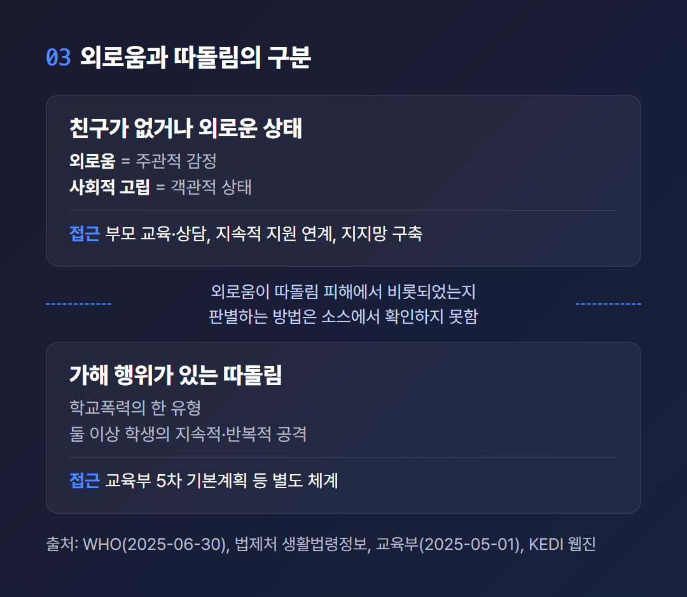
위 도식에서 눈여겨볼 곳은 가운데 점선이다. 외로움이 따돌림 피해에서 비롯되었는지 가려내는 방법을 이 글의 소스에서는 확인하지 못했다. 그래서 스스로 판단하기 어려울 때를 위한 길을 따로 안내한다.
따돌림에는 별도의 대응 체계가 있다. 교육부는 2025년 5월 1일 제5차 학교폭력 예방 및 대책 기본계획(2025~2029)을 발표했다. 학교·교원·학부모의 예방 역량 강화, 관계 회복과 정서·사회성 발달 중심의 예방, 가해학생 조치 개편, 학생 위기상담 강화가 들어 있다. 학교폭력 법령 관련 안내는 국민신문고(epeople.go.kr) 같은 정부 창구로 이어진다고 생활법령정보는 안내한다.
두 가지를 가르는 일이 어렵더라도 길은 막히지 않는다. 위(Wee) 클래스 대상 안내에는 학교폭력, 따돌림, 대인관계 미숙이 함께 들어 있고, 청소년상담 1388의 상담 주제에도 친구 문제와 학교폭력이 나란히 있다. 어느 쪽인지 몰라도 문을 두드릴 수 있다는 뜻이다.
친구가 없을 때 학생, 부모, 교사는 무엇을 할 수 있을까?
자료가 말하는 방법은 있다. 그러나 어느 것도 ‘이렇게 하면 해결된다’는 약속이 아니다. 근거의 성격이 모두 다르기 때문이다.
방법을 고르려면 근거의 성격을 알아야 한다. 그러려면 어디서 나온 말인지 가려야 한다. 그래서 방법마다 출처의 성격, 곧 연구인지 기관 권고인지 정책 제언인지를 붙인다.
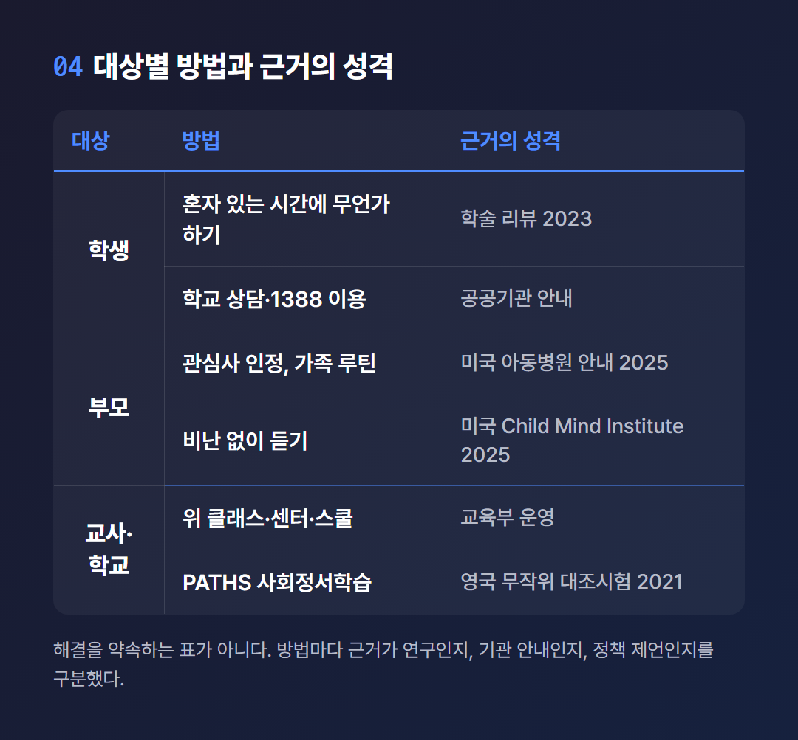
위 표는 이 대목 전체의 지도다. 아래에서 대상별로 하나씩 풀어 쓴다.
학생에게
여기서는 학생인 그대에게 말한다. 친구가 없을 때 쓸 수 있는 방법부터 찾고 싶었을 것이다. 먼저 솔직히 밝힌다. ‘이렇게 하면 친구가 생긴다’는 구체적 요령은 공공기관과 학회 소스에서 확인하지 못했다. 그래서 만들어 쓰지 않는다.
확인된 것은 몇 가지다. 청소년기의 혼자 있음을 다룬 학술 리뷰에서는 혼자 있는 시간에 무언가를 하는 쪽이 아무것도 하지 않는 쪽보다 적응에 나았다. 그리고 혼자 있는 이유가 중요했다. 이것은 연구가 본 경향이지 그대를 판정하는 기준이 아니다.
WHO는 개인과 관계 수준의 전략으로 사회기술훈련과 인지행동치료 같은 접근을 분류한다. 관계를 맺고 유지하는 능력을 기르는 접근이라는 설명이다. 이름만 소개하는 것이며, 어느 것이 그대에게 맞는지는 이 글이 판단할 수 없다.
혼자 감당하기 어려우면 학교의 위(Wee) 클래스에서 전문상담교사에게 신청하거나 청소년상담 1388을 이용할 수 있다. 이 창구들은 마지막 소제목에서 따로 정리한다. 이 대목에서 공공기관이 직접 안내하는 것은 이 창구들이다.
부모에게
이 대목은 부모 분들에게 하는 말이다. 근거는 미국 시애틀 아동병원의 보호자용 안내(2025년 11월 24일)다. 기관 권고이며 한국 기관의 안내가 아니다. 한국 공공기관의 부모용 구체 안내는 확인하지 못했다.
이 안내는 자녀의 관심사와 취미에 관심과 인정을 보이라고 한다. 식사나 게임의 밤 같은 가족 루틴과 전통으로 소속감과 안정감을 만들라고도 한다. 부모가 공감과 타협, 감정 알아차리기를 직접 보여주고, 이야기나 영화로 긍정적인 사회적 상호작용을 강화하라는 권고도 있다.
등교를 피하는 아이는 어떻게 대할까? Child Mind Institute의 글(임상 전문가 작성·검토, 2025년 2월 4일 갱신)은 비난 없이 듣고 원인을 파악하며 교사와 이야기하라고 한다. 장기 결석을 방치하지 않는 것도 중요하다고 한다. 결석이 길수록 복귀가 어렵기 때문이다.
한국 자료에서는 부모 교육·상담 강화가 필요하다는 정책 방향이 나온다. 이것은 부모 개인의 요령이 아니라 정책 방향의 제언이다. 이 두 해외 소스는 한 가정의 사정을 모두 알고 쓴 글이 아니다. 참고로만 삼기를 권한다.
TODO: 직접 경험 넣기 - 자녀·학생의 친구 문제를 곁에서 마주했던 경험이 있다면, 그때 한 일과 그 결과를 형용사 없이 사실로만
교사와 학교에
이 대목은 교사 분들과 학교에 하는 말이다. 교육부는 교내에 위(Wee) 클래스, 교육청 산하에 위 센터, 중·장기 치유가 필요한 학생을 위한 위 스쿨을 운영한다. 학교폭력 맥락의 계획에는 관계 회복과 정서·사회성 발달 중심의 예방, 학생 위기상담 강화가 들어 있다.
한국 웹진은 도움을 요청한 학생이 지속적인 지원으로 이어져야 한다고 제언한다. WHO는 연결감 있는 학교 환경을 이야기한다. 어느 쪽이든 방향의 제시일 뿐, 교실에서 무엇을 어떻게 하라는 단계별 방법은 소스에 없다. 그래서 만들어 쓰지 않았다.
학교 프로그램은 효과가 있을까?
효과를 보고한 연구가 있다. 다만 한계도 함께 보아야 한다. 학교 기반 외로움 개입을 모은 메타분석(meta-analysis)이 대표적이다.
이 연구는 의학 논문 사전공개 서버 medRxiv에 2026년 4월 16일 올라온 프리프린트(preprint)다. 동료심사를 거치지 않았다는 뜻이다. 1993~2025년 발표된 38편, 참가자 16,698명을 모았고 무작위 대조 19편, 비무작위 10편, 단일군 9편이 포함되었다.
전체 합산 효과는 유의했다(g = -0.42, 95% 신뢰구간 -0.71~-0.13). 유형별로는 심리적 개입 g = -1.18, 사회정서기술훈련 g = -0.41, 또래 지원 g = -0.24였다. 사회적·정서적 지지는 효과가 미미하거나 중립이었다.
같은 연구가 밝힌 한계도 크다. 연구 간 이질성(I²)이 86%로 높았고, 이상치를 빼도 62%였다. 예측구간은 -2.00~1.17로 0을 포함한다. 개별 개입이 모든 환경에서 효과를 낸다고 일반화하기 어렵다는 취지다. 시행 강도와 충실도 보고가 미흡했고, 63%가 ‘약한’ 질로 평가되었으며, 다수가 파일럿이었다.
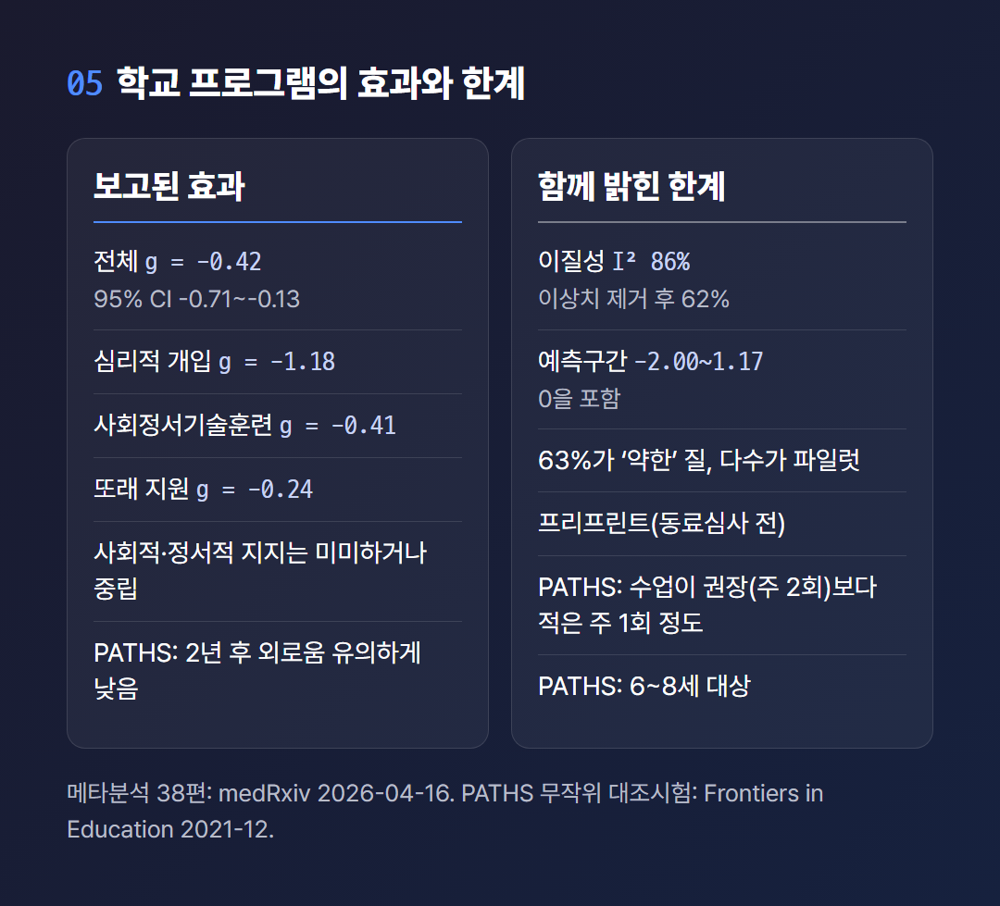
위 카드는 두 연구의 숫자를 좌우로 놓은 것이다. 한쪽만 읽으면 오해하기 쉬워서 나란히 두었다. 두 소스를 서로 판정하지 않고 함께 전한다.
다른 하나는 영국 초등 1~2학년 대상 사회정서학습 교육과정 PATHS의 무작위 대조시험이다. 2021년 12월 Frontiers in Education에 발표되었고, 45개 학교 6~8세 5,218명이 참여했다. 2년 후 개입 학교의 아동이 ‘외롭지 않다’ 또는 ‘거의 외롭지 않다’고 답할 가능성이 유의하게 높았다.
여기에도 한계가 있다. 실제 수업은 권장인 주 2회보다 적은 주 1회 정도였고, 분석은 준수 여부를 반영하지 않았다. 대상이 6~8세라서 이 연구만으로 더 높은 학령을 말할 수는 없다.
어디에 도움을 청할 수 있을까?
친구가 없을 때 기댈 수 있도록 소스가 안내하는 공공 창구가 있다. 청소년상담 1388, 위(Wee) 클래스와 센터, 정신건강 관련 상담전화가 그것이다. 따돌림이 의심될 때도, 그냥 마음이 무거울 때도 문을 두드릴 수 있다.
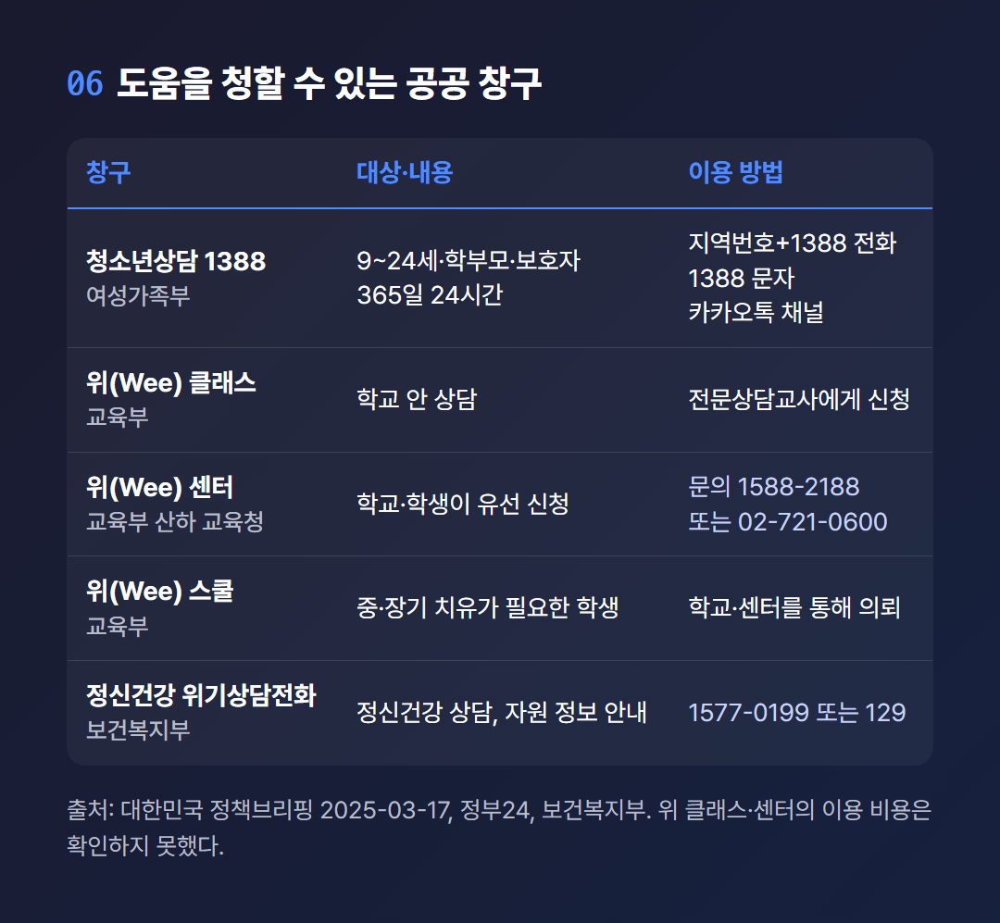
위 표를 글로도 풀어 둔다. 청소년상담 1388은 여성가족부가 운영하며 9~24세 청소년과 학부모·보호자, 기관 담당자가 대상이다. 학업·진로, 친구 관계, 가족, 학교폭력, 성폭력, 가출 상담을 하고 365일 24시간 열려 있다. 위기 시에는 긴급 지원과 기관 연계가 있다.
이용 방법은 지역번호와 1388로 전화하거나, 1388로 문자를 보내거나, 카카오톡 채널을 쓰는 것이다. 페이스북·인스타그램 메시지와 www.1388.go.kr도 안내된다. 지자체 센터의 한 예로 성남시청소년청년재단은 031-756-1388로 교우관계와 학업 고민을 무료로 받는다. 평일 9~18시는 본 센터가, 야간·주말·휴일은 경기도청소년상담복지센터가 응대한다고 안내한다.
학교 안에는 위(Wee) 클래스가 있다. 학생이 담당 전문상담교사에게 신청한다. 위 센터는 학교나 학생이 유선으로 신청하며, 문의는 교육부 콜센터 1588-2188 또는 02-721-0600이다. 위 스쿨은 학교와 센터를 통해 의뢰한다. 위 클래스와 센터의 이용 비용은 본문에서 직접 확인하지 못했다.
마음이 많이 힘들 때는 보건복지부의 정신건강 위기상담전화 1577-0199 또는 129(보건복지상담센터)가 있다. 자살 위기상담, 정신건강 상담, 정신건강 자원 정보 안내, 정신과 시설 연계를 맡는다. 거주지 시·군·구의 정신건강복지센터는 지역에 따라 아동·청소년 대상 서비스를 운영한다.
전문가의 도움은 언제 청하면 좋을까? 한국 공공기관 소스에서 기간이나 기능 저하의 기준을 직접 제시한 문서는 확인하지 못했다. 한국에서는 위 창구의 상담이 출발점으로 안내되어 있다. 아래는 모두 미국 기관의 안내이며 한국의 기준이 아니다.
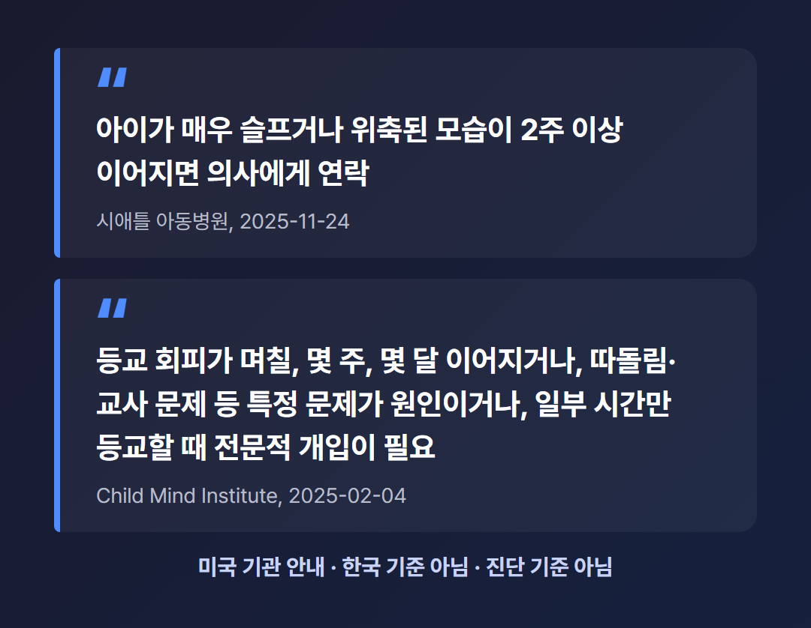
위 박스는 두 기관이 적은 신호를 그대로 옮긴 것이다. 시애틀 아동병원 안내는 아이가 매우 슬프거나 위축된 모습이 2주 이상 이어지면 의사에게 연락하라고 하며, 우울일 수 있다는 설명을 붙인다. Child Mind Institute는 등교 회피가 이어지거나 따돌림 같은 특정 문제가 원인일 때 전문적 개입이 필요하다고 본다. 이 신호들은 진단 기준이 아니라 도움을 청할 때를 가늠하는 참고다. 진단과 치료는 이 글이 다루지 않는다.
친구가 없을 때 학생에게 가장 먼저 필요한 것은 무엇일까? 새 친구일 수도 있고, 말을 건넬 수 있는 어른 한 사람일 수도 있다. 이 글의 자료는 그 답을 하나로 정해 주지 못한다. 친구가 없는 학생을 곁에서 지키는 일에는 정답표가 없다.
내 정리가 전부는 아닐 것이다. 다른 자료와 다른 경험에서 더 나은 길을 찾은 분들도 있을 것이다. 그런 이야기를 나도 듣고 싶다. 다만 이 자료들이 공통으로 보여주는 것이 하나 있다. 문을 두드릴 창구가 이미 열려 있다는 사실이다.
2026년 5월 기준으로 확인한 자료로 쓴 글이다. 성경 본문과 고전 주석은 오래된 자료이며, 주석은 Bible Hub와 Precept Austin 같은 모음 사이트를 통해 읽었다.
자녀를 노엽게 하지 말라. 에베소서와 골로새서에 나오는 이 한 줄을 읽고 나면 질문이 줄줄이 따라온다. 노엽게 한다는 것은 정확히 어떤 일일까? 아이가 화낼 일은 아예 하지 말라는 뜻일까? 그러면 야단은 어떻게 치란 말인가.
나는 신학자가 아니라서 이 질문에 판결을 내릴 수 없다. 대신 번역본, 원어 사전, 고전 주석이 이 구절을 어떻게 설명하는지 나란히 놓아 보려 한다. 주석이 갈리는 곳에서는 갈린다고 쓰고, 어느 쪽이 옳은지는 가리지 않는다. 한국어 주석은 이번에 찾지 못했다는 점도 미리 밝혀 둔다.
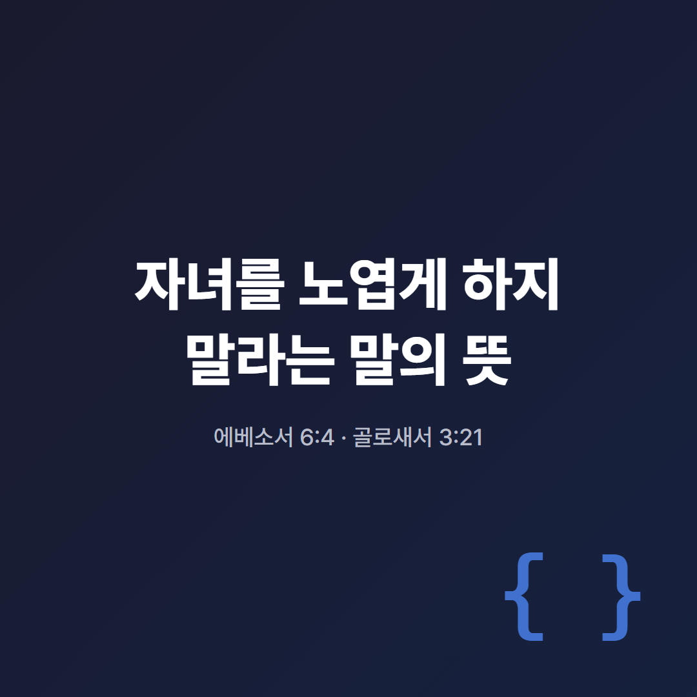
위 그림은 이 글이 다루는 두 구절이다. 같은 명령이 한 번은 긍정 명령과 함께, 한 번은 낙심이라는 이유와 함께 나온다. 이 둘을 차례로 풀어 보겠다.
두 본문은 어디에 놓여 있나?
두 본문 모두 자녀에게 순종을 말한 바로 뒤에, 아버지들에게 노엽게 하지 말라고 건네는 말이다. 순종을 요구받는 쪽이 아니라 권위를 가진 쪽을 향한 명령이라는 점이 먼저 눈에 들어온다.
에베소서 6:1–3은 자녀에게 순종과 공경을 말하고 십계명의 제5계명을 인용한다. 그 직후 6:4에서 말의 방향이 아버지로 바뀐다. 개역개정은 “또 아비들아 너희 자녀를 노엽게 하지 말고 오직 주의 교훈과 훈계로 양육하라”고 옮긴다. 개역한글은 '교훈' 자리에 '교양'이라고 쓴다.
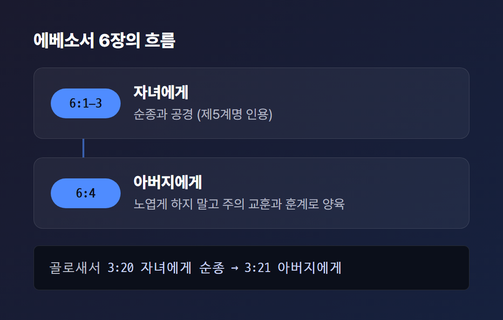
그림처럼 골로새서 3:21도 3:20에서 자녀에게 순종을 말한 직후에 온다. 개역개정은 “아비들아 너희 자녀를 노엽게 하지 말지니 낙심할까 함이라”이다. 이 구절이 속한 3:18–4:1이 가정 규범이라는 설명은 일부 주석 요약에서만 확인했다. 에베소서 6장에 대해서는 Expositor's Bible이 제5계명을 로마의 효 개념과 견주며, 자녀의 순종이 가정 질서의 기초로 다뤄졌다고 설명한다.
번역본 표현은 서로 다르다. 에베소서 6:4의 '노엽게'를 ESV·NIV·NASB는 provoke ... to anger로, KJV는 provoke to wrath로 옮겼다. NLT는 아이를 대하는 방식으로 화나게 한다는 설명을 덧붙인다. 골로새서 3:21은 NIV가 embitter, ESV와 KJV가 provoke, NASB가 exasperate, NLT가 aggravate다.
한국어는 개역개정이 두 구절 모두 '노엽게'를 쓴다. 새번역 골로새서는 “격분하게 하지 마십시오”라고 쓰고, 낙심 부분은 “그들의 의기를 꺾지 않아야 합니다”로 풀어 쓴다. 어느 번역이 맞는지는 판정하지 않고 표현 차이만 적는다. ESV 골로새서 3:21의 정확한 본문은 ESV 사이트로 확인하지 못했다. Bible Hub 제목에서 so that they will not lose heart라는 표기를 본 것이 전부다.
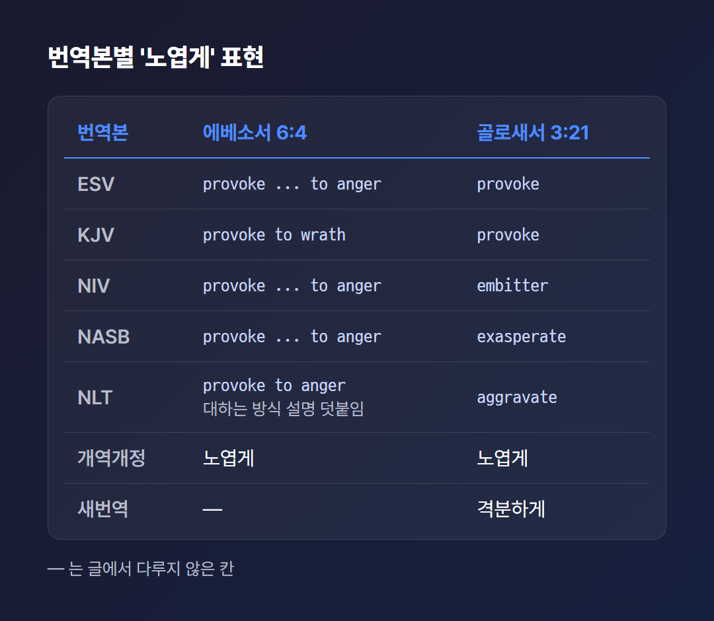
표에서 보듯 '노엽게'라는 한국어 하나가 영어에서는 여러 단어로 흩어진다. 같은 뜻인데 번역이 달라졌는지, 원문 자체의 결이 달라서인지는 다음 장에서 원어를 보며 살펴본다.
'노엽게 하다'는 원어로 무슨 뜻인가?
에베소서와 골로새서는 한국어로는 같은 '노엽게'지만 서로 다른 헬라어 동사를 쓴다. 에베소서의 parorgizo는 '곁에서 화나게 하다, 격노하게 하다'라는 뜻이다. 골로새서의 erethizo는 '자극해 반응하게 하다'이며, 나쁜 뜻으로는 '짜증나게·분하게 하다'로 쓰인다.
parorgizo부터 보자. 에베소서의 문장은 금지가 현재 시제로 쓰여서 '계속하는 것을 멈추라' 또는 '시작하지 말라'로 읽을 수 있다고 Precept Austin은 정리한다. 이 정리에 따르면 노엽게 하는 일의 문제는 순간의 폭발이 아니라 반복이다. 속에 맺힌 원망은 한 번에 생기는 게 아니라 되풀이되는 자극 속에서 쌓이는 것이다.
erethizo는 풀이가 갈린다. Precept Austin이 인용한 BDAG 정의는 앞서 말한 '자극해 반응하게 하다'이고, 이 단어는 신약에서 골로새서 3:21과 고린도후서 9:2 두 곳에만 나온다. 고린도후서에서는 긍정적 뜻으로 쓰인다.
Ellicott는 이 동사를 노여움이 아니라 '경쟁심을 일으키다'로 풀고, 끊임없고 쉼 없는 자극을 금한 것으로 읽는다. JFB는 '짜증나게 하지 말라'로, Cambridge Bible은 chafe, irritate로 옮긴다. Vincent는 이 단어가 고린도후서 9:2와 이 구절에만 나온다는 점에 주목한다.
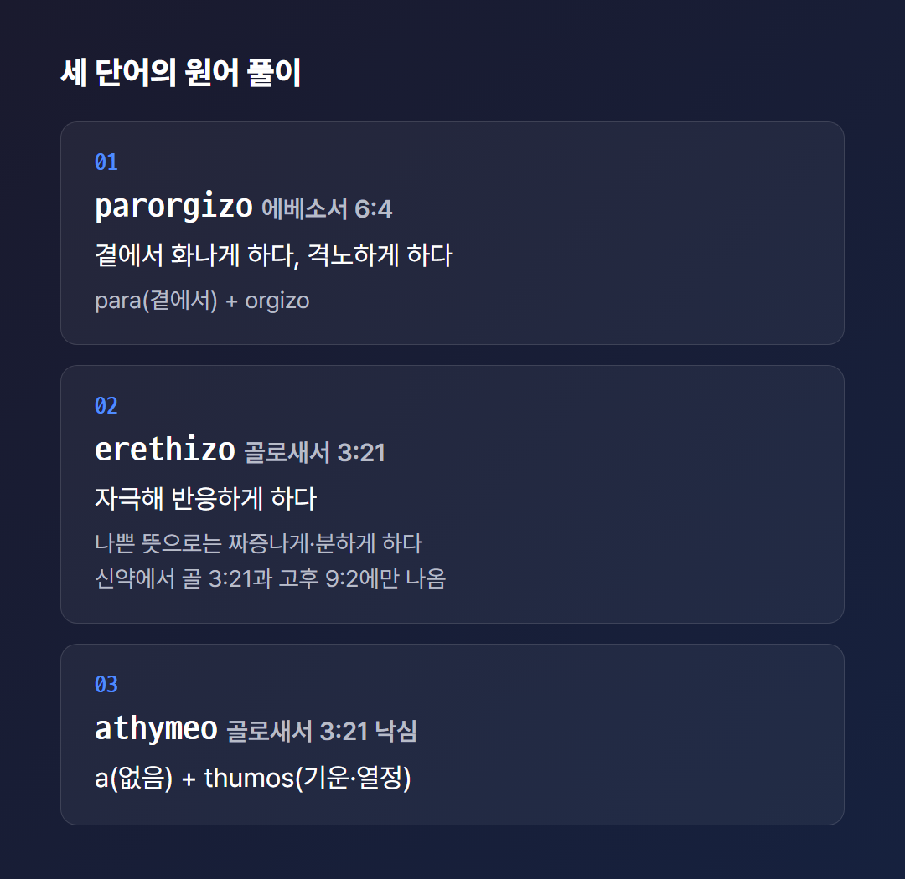
카드의 둘째 칸에서 볼 수 있듯 이 두 읽기는 서로 다른 방향을 가리킨다. 한쪽은 밀어붙이는 자극을 말하고 다른 쪽은 마찰과 짜증을 말한다. 소스는 Ellicott의 설명이 고린도후서 9:2의 긍정적 용례와 어떻게 이어지는지 직접 풀어 주지 않았고, 두 읽기를 판정하지도 않는다. 이 글도 같은 자리에 선다.
노엽게 하면 자녀는 어떻게 되나?
골로새서는 노엽게 한 결과를 직접 적는다. 낙심이다. athymeo는 a(없음)와 thumos(기운·열정)가 합쳐진 말로, 의욕을 잃을 만큼 기가 꺾인 상태를 뜻한다고 Precept Austin은 정리한다.
바람이 빠진 풍선을 떠올리면 이해가 쉽다. 모양은 그대로인데 힘이 없다. 다만 풍선은 다시 불면 되지만, 사람의 낙심이 그렇게 간단하다는 말은 아니다. 비유는 여기까지만 쓴다.
주석가들은 이 낙심을 구체적으로 풀어 쓴다. Bengel은 낙심이 '청소년의 해악'이라고 했다. Barnes는 끊임없이 흠을 잡으면 자녀가 용기를 잃고, 부모를 기쁘게 할 수 없다고 여겨 절망한다고 쓴다. Gill은 자녀가 맥이 빠지고 무기력해지거나 부모의 사랑을 얻지 못한다고 생각해 지시와 훈계를 무시하고 완고하고 반항적이 될 수 있다고 설명한다.
Eadie(Precept Austin 인용)는 짜증이 끊이지 않으면 자녀가 기쁘게 하려는 노력을 포기하고 기계적인 순종만 하게 될 수 있다고 했다. 자라는 어린 영혼에게는 부드럽고 조심스러운 대우가 필요하다고도 했다. Spurgeon은 자녀는 순종해야 하지만 아버지는 화나게 해서는 안 된다는 취지로 말한다. Peter Pett은 지나치게 많은 명령과 비판이 낙심, 반항, 마지못한 눈가림 순종으로 이어지고, 지침이 너무 적으면 의심과 불확실이 생긴다고 쓴다.
TODO: 직접 경험 넣기 - 부모의 말이나 태도 때문에 기가 꺾였던 기억, 또는 자녀의 기운이 빠져 보였던 순간이 있다면 한두 문장
그렇다면 무엇이 '노엽게 하는 행동'일까? 낙심하지 않게 하려면 무엇이 낙심시키는지부터 알아야 한다. 그러려면 주석가들이 든 항목을 보아야 한다. 자녀를 노엽게 하는 행동의 항목은 출처마다 다르다.
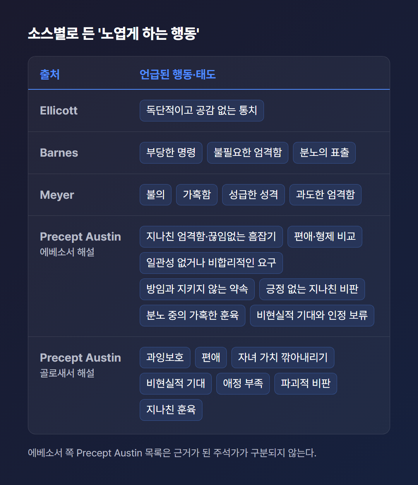
표의 항목은 모두 노엽게 하는 행동에 대한 소스별 해설이다. 에베소서 쪽 Precept Austin의 목록은 근거가 된 주석가가 페이지에서 구분되지 않는다. 이 항목들을 어떻게 실천에 옮길지는 소스가 제시하지 않았고, 그래서 이 글도 다루지 않는다.
왜 하필 아버지들인가?
노엽게 하지 말라는 명령이 왜 아버지들에게 놓였는지, 답은 하나로 모이지 않는다. 소스 안에 서로 다른 설명이 함께 있다. 어느 것을 정답으로 고르지 않고 나란히 적는다.
첫째는 가정의 머리라는 권위의 자리다. Gill은 아버지가 가정의 머리여서 너무 엄격해지기 쉽고 어머니는 너무 관대하기 쉽다고 본다. JFB는 아버지를 '가정 권위의 샘'이라 부르며 자녀 문제에서 어머니보다 격정에 빠지기 쉽다고 보고, Bengel은 아버지가 권한을 더 쉽게 남용한다고 본다. 이 셋은 Bible Hub에 인용된 풀이다.
둘째는 두 부모를 모두 포함할 수 있다는 읽기다. Precept Austin은 헬라어 pateres(아버지들)가 두 부모를 모두 가리킬 수도 있다고 하면서, 바울이 아버지의 책임을 강조한다고 정리한다.
셋째는 로마 사회의 배경이다. Precept Austin은 1세기 로마 제국에서 아버지가 가정에서 거의 마음대로 할 수 있었다고 소개한다. 그렇기에 복음이 아버지의 권위 행사를 사랑에 따르도록 바꾸는 것은 당시로서는 혁명적이었다는 해설이다.
넷째는 가정 안의 대표 권위라는 설명이다. Bengel과 Cambridge Bible은 골로새서에서 아버지가 가정의 주된 부모 권위를 대표한다고 본다.
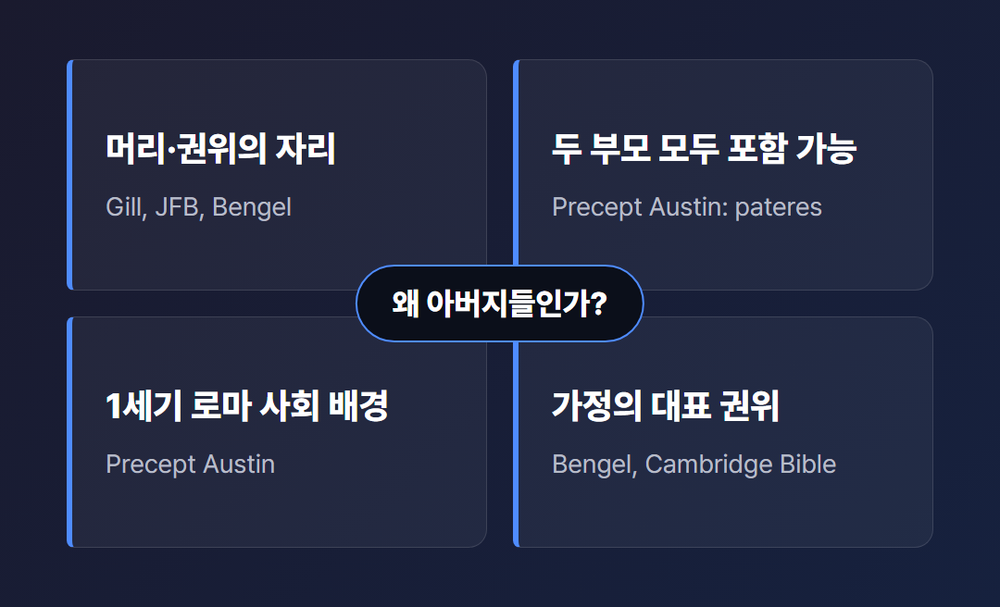
이 네 가지는 하나가 다른 것을 지우는 관계가 아니라 소스 안에 함께 놓여 있는 설명이다. 소스는 이들 가운데 어느 것이 정답인지 가리지 않고, 이 글도 가리지 않는다.
훈육과는 어떤 관계인가?
확인한 소스 중에 노엽게 하지 말라를 훈육 자체의 금지로 읽는 곳은 없었다. 오히려 에베소서 6:4는 금지 바로 뒤에 긍정 명령을 붙인다. 그 명령의 첫 단어 paideia는 훈련과 교육을 뜻하며 징계적 교정까지 포함하고, 둘째 단어 nouthesia는 가벼운 책망, 경고, 권면을 뜻한다.
주석 일부는 두 단어를 구분한다. Vincent는 '훈련'이 도덕적·영적 훈련에 기여하는 모든 수단을 포괄하고 '훈계'는 말로 하는 훈련이라고 본다. Expositor's Greek Testament는 행동과 훈련을 통한 양육과 말을 통한 양육으로 나눈다. Precept Austin은 두 용어 모두 '주의' 기준, 곧 그리스도의 권위 아래서 이뤄지는 훈련임을 강조한다.
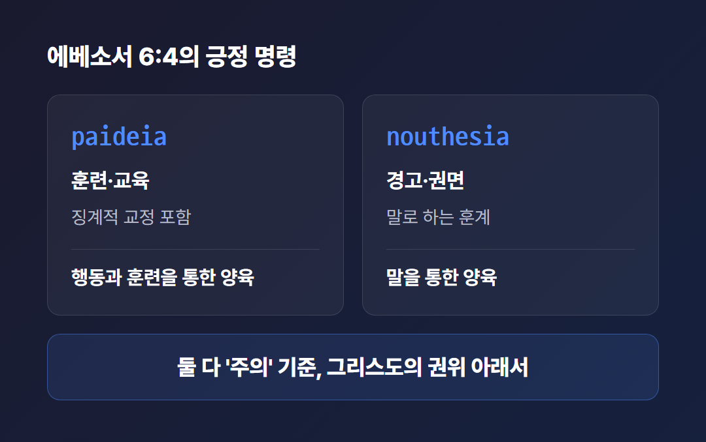
그림의 아랫줄이 소스들이 두 단어를 묶는 지점이다. 그렇다면 소스들이 노엽게 하는 일로 경계하는 것은 무엇일까? 확인한 범위에서는 훈육 그 자체라기보다 훈육이 이뤄지는 상태다.
Barnes는 징벌이 부모의 감정이 아니라 원칙에서 나와야 한다고 쓴다. Precept Austin은 분노 중에 하는 가혹한 훈육을 자녀를 노엽게 하는 사례로 든다. Pett은 엄격함이 필요하고 때로는 체벌도 필요할 수 있다고 하면서, 그것이 보복적이거나 지나치거나 부모가 자제력을 잃은 상태에서 이뤄져서는 안 된다고 한다. 다른 소스가 같은 입장인지는 확인하지 못했다.
Expositor's Bible은 가정의 통치가 “단호하면서도 친절해야” 한다고 쓴다. 거슬리게 하는 것도 피하고, 불쾌감을 아예 피하는 것도 아니어야 한다는 취지로 정리된다. Eadie, Spurgeon, Gill은 끊임없는 흠잡기와 과도한 엄격함을 문제로 삼을 뿐 훈육 방식을 논하지는 않았다.
이 부분은 내가 확인한 범위가 좁다. 체벌의 허용과 금지를 직접 다룬 학술 주석은 읽지 못했다. 잠언의 '매' 구절과 이 명령의 관계를 다룬 해설도 확인하지 못했다. ESV 사이트의 에베소서 6:4 참조 목록에는 신명기 6:7과 잠언 22:6이 올라 있으나, 이는 번역본이 붙인 목록일 뿐 주석의 해설이 아니다. 신명기나 잠언과 이 명령을 구체적으로 이어서 풀어 쓴 주석은 찾지 못했다. 그래서 이 연결에 대해서는 아는 것처럼 쓰지 않는다.
TODO: 직접 경험 넣기 - 이 구절을 어떤 자리에서 처음 들었는지, 또는 훈육과 노엽게 함의 경계를 두고 고민했던 경험이 있다면 한두 문장
자녀를 노엽게 하지 말라는 말은 짧지만, 그 안에 담긴 설명은 길고 서로 갈린다. 동사가 둘이고, 번역이 여럿이고, 아버지를 지목한 이유도 여럿이다. 확인하지 못한 곳도 분명히 있다. 한국어 주석, 신명기와 잠언의 연결 해설, 체벌 논쟁을 직접 다룬 학술 주석이 그렇다.
그렇다면 이 구절은 그대에게 어느 자리에서 읽히는가? 노엽게 하는 쪽의 자리일까, 낙심하는 쪽의 자리일까. 내 정리가 전부일 리는 없다. 같은 본문을 다른 길로 읽은 분이 있다면 그 길도 듣고 싶다.
2026년 5월 기준으로 확인한 자료로 쓴 글이다. 성경 본문은 개역개정과 ESV만 확인했고, 주석은 대체로 17~19세기에 쓰인 고전 주석이 중심이다. 해석이 갈리는 곳은 양쪽을 함께 적었다.
“성경은 자녀를 어떻게 키우라고 하나요?”
이런 질문을 품고 이 글을 열었을 분들이 있을 것이다. 성경 자녀양육을 다룬 글은 많다. 그런데 구절마다 해석이 갈리는 곳이 있어서 한 문장으로 답하기가 어렵다.
그래서 이 글은 답을 하나로 모으지 않는다. 에베소서 6:4, 골로새서 3:21, 신명기 6:4~7, 잠언 22:6, 잠언 13:24. 이 다섯 구절이 무엇을 말하는지, 자료마다 어떻게 읽는지를 출처와 함께 옮긴다. 어느 해석이 옳은지는 나도 판정하지 않는다.
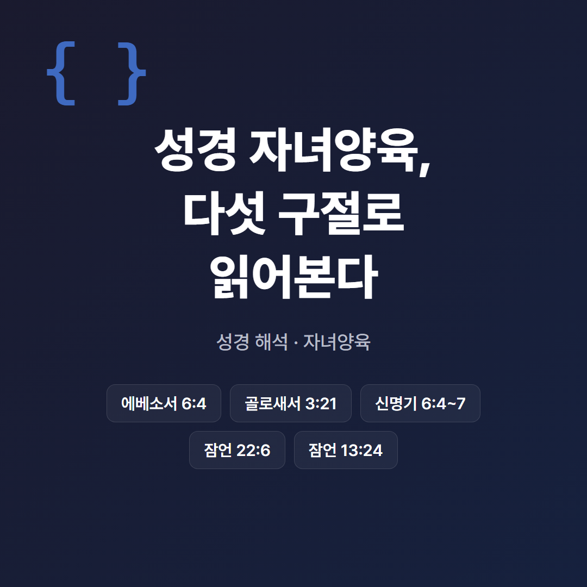
위 이미지는 이 글이 다루는 다섯 구절의 지도다. 아래에서 순서대로 하나씩 본다.
성경 자녀양육에서 ‘노엽게 하지 말라’는 말은?
에베소서 6:4는 자녀양육에 관해 아버지들에게 두 가지를 말한다. 자녀를 노엽게 하지 말라는 것, 그리고 주의 훈육과 가르침으로 양육하라는 것이다. 개역개정은 “또 아비들아 너희 자녀를 노엽게 하지 말고 오직 주의 교훈과 훈계로 양육하라”로 옮겼다.
이 자녀양육 구절은 금지만 한 게 아니라 적극 명령을 함께 둔 것이다. 하지 말 것과 할 것이 한 문장 안에 들어 있다.
문맥도 짚어 둘 만하다. 앞 문단인 6:1~3은 자녀가 주 안에서 부모에게 순종하라는 말이고, 6:2는 “아버지와 어머니를 공경하라”를 약속이 딸린 첫 계명으로 언급한다. 6:4가 이어서 아버지에게 말한다. 고전 주석들은 이 구절을 에베소서 5:22~6:3으로 이어지는 가정 안 관계 의무의 구조 속에 둔다.
낱말은 어떻게 풀릴까? ‘노엽게 하다(parorgizo)’를 Ellicott는 독단적이고 동정심 없는 지배에서 생기는 격분으로 설명한다. Meyer는 부당함, 거침, 성급한 기질에서 오는 짜증이라고 한다. Expositor's Greek는 계획적으로 화나게 하는 강한 동사로 본다.
‘훈육(paideia)’은 Vincent가 도덕적·영적 훈련에 기여하는 모든 수단을 아우르는 말로 본다. ‘가르침’은 Ellicott가 말로 ‘생각나게 하는’ 가르침으로 풀고, Pulpit은 훈육과 구별되는 가르침으로 본다.
번역본도 다르다. ESV는 “discipline and instruction”으로, 개역개정은 “교훈과 훈계”로 옮겼다. 단어도 순서도 같지 않다.
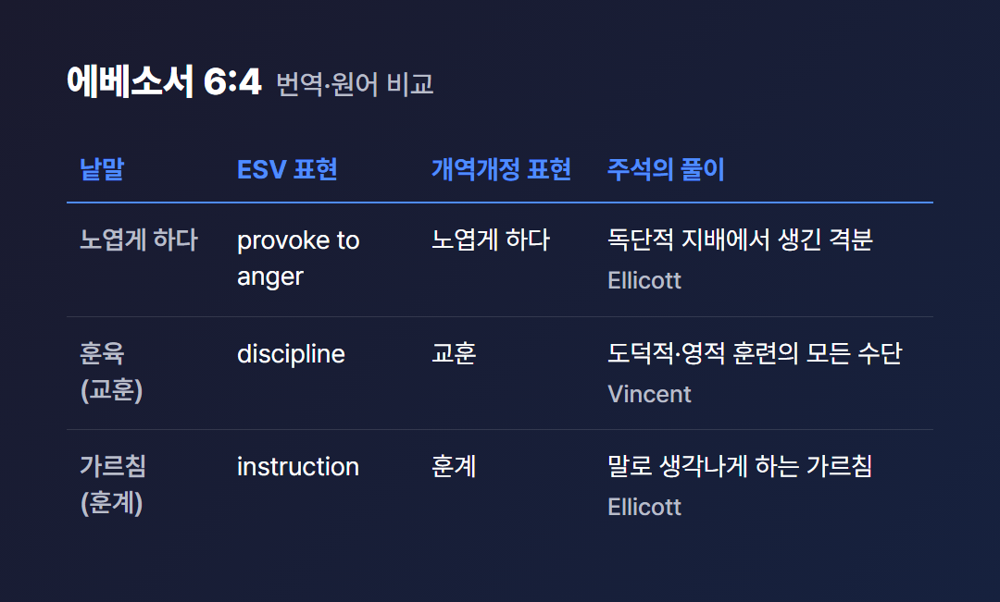
표는 같은 구절이 번역과 주석에서 어떻게 달라지는지를 한눈에 모은 것이다. 이 표의 풀이는 모두 위에서 확인한 주석에서 온 것이다.
그렇다면 왜 어머니가 아니라 ‘아버지들’일까? 주석은 두 갈래로 답한다. Alford, Barnes, Meyer, Cambridge는 아버지가 가정의 머리로서 권위와 자녀 훈련의 통치를 맡았기 때문이라고 본다. Bengel과 Jamieson-Fausset-Brown은 아버지가 어머니보다 격정에 더 쉽게 휩쓸리는 경향이 있기 때문이라고 본다.
하나는 권위 구조를, 다른 하나는 성향을 이유로 든다. 어느 쪽이 맞는지는 이 자료들로 가를 수 없다.
TODO: 직접 경험 넣기 - 어린 시절 부모에게, 또는 자녀를 대하면서 ‘노엽다’고 느꼈거나 느끼게 했던 순간과 그때의 마음
골로새서의 자녀양육 권면은 왜 ‘낙심’을 말할까?
골로새서 3:21(ESV)은 에베소서와 비슷한 자녀양육 권면에 이유를 붙인다. 노엽게 하지 말라는 금지 뒤에 낙심이 나온다.
“Fathers, do not provoke your children, lest they become discouraged.”
개역개정은 같은 구절을 “아비들아 너희 자녀를 노엽게 하지 말지니 낙심할까 함이라”로 옮겼다. 에베소서 6:4에서는 ‘노엽게 하는 일’에 방점이 있다. 골로새서 3:21에서는 그 뒤에 올 결과로서의 의기소침이 명시된다.
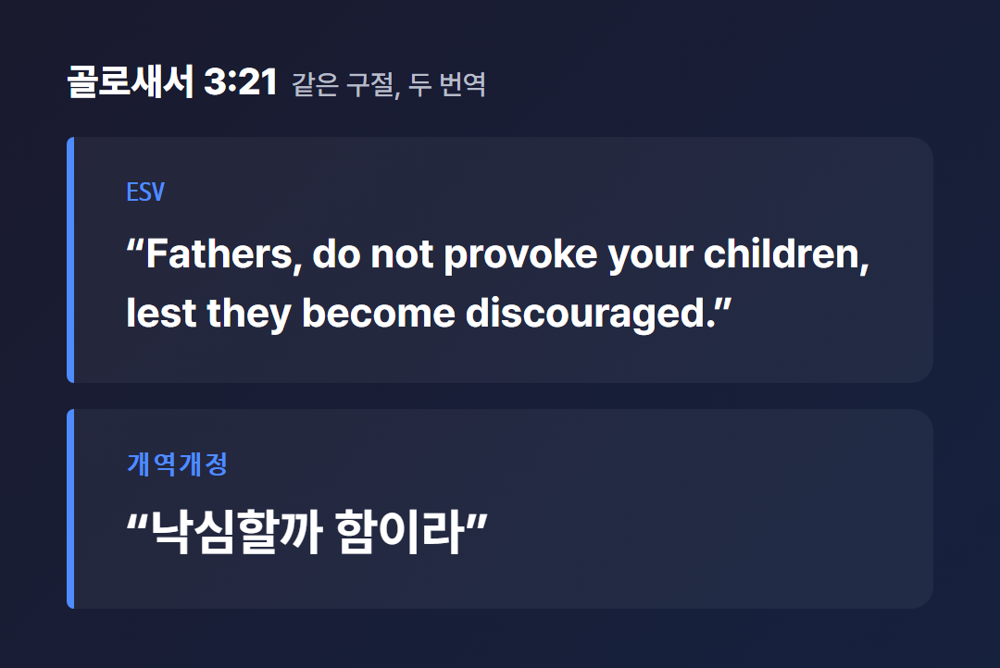
박스에 담은 것은 같은 구절의 두 번역이다. 영어의 ‘discouraged’가 한국어 개역개정에서는 ‘낙심’이 된다.
문맥은 이렇다. 앞의 3:18~20은 아내, 남편, 자녀에게 주는 권면이고, 3:20은 자녀가 부모에게 순종하라는 말이다. 3:21이 아버지들에게 말한다. Cambridge는 아버지를 부모 권위의 ‘자연스러운 대표’로 보되 양 부모를 포함할 수 있다고 한다.
‘낙심(athymeo)’은 주석가마다 결이 조금씩 다르게 풀린다. Bengel은 꺾인 정신, 젊음의 해악이라고 한다. Barnes는 기쁘게 해드릴 수 있다는 소망을 잃고 용기를 잃는 것이라고 한다. Gill은 슬픔으로 정신이 꺾여 무기력해지는 것이라고 한다.
Pulpit은 한 걸음 더 나아간 함의를 짚는다. 부모의 권위를 잘못 쓰면 자녀가 아버지를 친구가 아닌 적으로 보게 될 수 있다는 것이다.
‘노엽게 하다’의 원어는 에베소서와 다르다. 여기서는 erethizo가 쓰였다. Cambridge는 ‘자극해 짜증나게 하다’로 풀고, Vincent는 고린도후서 9:2에서 이 낱말이 선행을 북돋운다는 뜻으로 쓰였으니 문맥이 중요하다고 한다.
Ellicott는 문맥에 따라 ‘경쟁심을 일으키다’로 읽힐 수 있는 쪽으로 서술하는 한편, 끊임없는 불안한 자극을 금한다는 데까지 말한다. 그 이상의 해석은 확인하지 못했다. Cambridge와 Pulpit은 짜증이나 분노를 일으키는 것으로 설명한다.
신명기 6:4~7의 자녀양육은 무엇을 가르치라 할까?
신명기 6:4~7은 말씀을 부모 자신의 마음에 먼저 두고, 자녀에게 부지런히 가르치며, 일상 어디서나 이야기하라고 명령한다. 이 구절은 쉐마로 불리는 6:4~9 안에 들어 있다.
개역개정 6:7은 “네 자녀에게 부지런히 가르치며”로 시작해 집에 앉았을 때, 길을 갈 때, 누워 있을 때, 일어날 때에 이 말씀을 강론하라고 잇는다. 네 가지 상황이 하루를 한 바퀴 돈다.
본문의 순서가 중요하다. 6:4~5의 쉐마는 하나님이 한 분이시며 마음·영혼·힘을 다해 사랑하라는 취지다(ESV). 이어서 6:6이 그 말씀을 먼저 부모 자신의 마음에 있게 하라고 한다. 자녀양육의 구체적 명령은 6:7에서 나온다.
자녀에게 가르치려면 말씀이 부모 마음에 있어야 한다. 그러려면 6:4~5의 고백이 앞에 서야 한다. 본문이 그 순서를 그렇게 놓았다.
‘가르치다(shanan)’는 어떤 낱말일까? Poole은 ‘갈다, 날카롭게 하다’라는 뜻이라서 마음속 깊이 꿰뚫게 하라는 뜻으로 풀었다. Gill은 반복과 계속적인 주입으로 보았고, Cambridge는 날카롭게 하여 자녀에게 새기는 것으로 풀었다.
칼을 숫돌에 가는 일을 떠올리면 쉽다. 한 번 문지르고 마는 게 아니라 여러 번 반복해서 날을 세운다. 다만 비유는 여기까지다. 아이는 칼이 아니다.
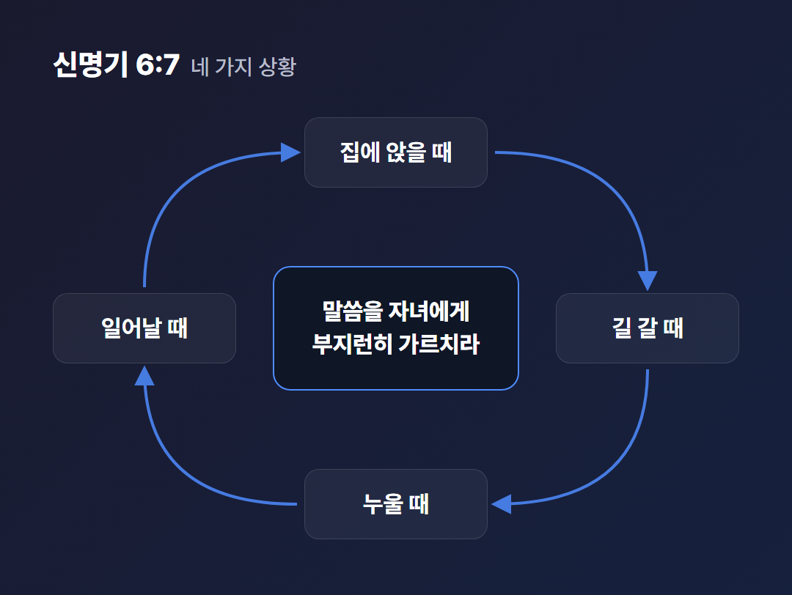
다이어그램의 네 방향은 본문의 네 상황이다. 주석에서 확인되는 것은 이 네 상황을 하루 전체로 읽는다는 점이다. Benson은 네 상황을 하루 전체로 풀었고, Matthew Henry는 모든 기회에 신적인 일을 대화하라고, Gill은 모든 기회에 하나님에 대한 지식을 심으라고 읽었다.
누가 가르치고 누구에게 가르치는지도 주석마다 범위가 다르다. Barnes는 부모를 가정 안의 교육자로 본다. Ellicott는 부모가 자녀가 물을 만한 질문에 즉시 답할 수 있어야 한다고 본다. Benson은 가르침이 자녀뿐 아니라 종, 친구, 동료에게까지 미친다고 본다.
Jamieson-Fausset-Brown은 이 체계가 종교를 가정생활의 모든 친숙한 것과 연결하도록 짜인 것이라고 보았다. Keil & Delitzsch는 계명이 늘 생각과 대화의 주제가 되어야 한다고 보았다.
TODO: 직접 경험 넣기 - 집에서 신앙이나 말씀을 일상 대화로 나눈 경험, 혹은 그러지 못해 아쉬웠던 경험
잠언 22:6 자녀양육의 ‘마땅히 행할 길’이란?
잠언 22:6은 아이에게 ‘마땅히 행할 길’을 가르치면 늙어도 그것을 떠나지 않는다고 말한다. 개역개정은 “마땅히 행할 길을 아이에게 가르치라 그리하면 늙어도 그것을 떠나지 아니하리라”로 옮겼다. ESV는 “Train up a child in the way he should go”로 시작한다.
문제는 ‘마땅히 행할 길’이 무엇이냐는 것이다. 자료에는 서로 다른 읽기가 있다. 어느 것도 이 글이 고르지 않는다.
도덕적이고 올바른 길로 읽는 견해가 있다. Matthew Henry Concise, Gill, Benson이 이쪽이다. Gill은 순종과 종교의 길로, Benson은 네가 아이가 택하기를 바라는 삶의 길로 풀었다. Hildebrandt는 McKane를 이 견해의 대표로 소개한다.
아이의 기질과 성향에 맞추는 읽기도 있다. Barnes는 각 아이의 기질을 연구하라고 보고, Pulpit은 아이의 본성·능력·기질을 고려한다고 본다. Cambridge는 개별 성격과 능력을, Keil & Delitzsch는 삶의 단계에 따른 규율을 말한다.
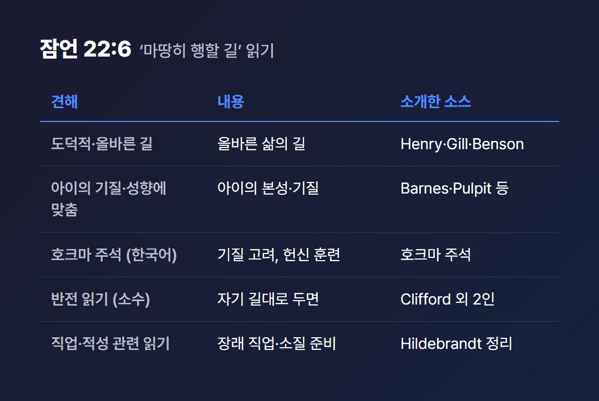
표는 자료에서 갈리는 다섯 가지 읽기를 소스와 함께 정리한 것이다.
호크마 주석(한국어)은 두 가지를 함께 취한다. ‘그의 길을 따라’가 원문의 문자적 뜻이라서 아이의 자질·성격·능력·잠재력·본성·기질을 고려해야 한다고 풀었다. 동시에 어려서부터 아이가 하나님께 헌신하는 삶을 살도록 훈련하라는 규범적 교훈으로 정리했다.
가장 눈에 띄는 것은 Hildebrandt가 소개하는 소수의 읽기다. 그는 히브리어 본문에 영어 ‘should(마땅히)’에 해당하는 낱말이 없고 ‘그의 길’이라고만 되어 있다고 소개한다(Douglas Stuart의 지적으로). Clifford, Stuart, Aiken의 읽기는 이 구절을 경고로 본다. 아이를 ‘자기 길’대로 내버려두면 늙어서도 거기서 벗어나지 못한다는 뜻이라는 것이다.
이 읽기는 일반 해석을 뒤집는다고 소개되며, 의도적 모호성일 수 있다는 의문도 함께 제시된다. 한편 도덕적 읽기를 취하는 주석은 같은 ‘그 길’을 올바른 길로 본다. 도덕적 수식어가 없다는 점을 의문의 근거로 드는 쪽과, 그래도 올바른 길로 읽는 쪽이 자료에 함께 있다.
이 구절은 자녀양육의 약속일까? 확인된 자료들은 같은 방향을 가리킨다. Poole은 보편적이고 필연적으로 참은 아니며 대체로 그렇다는 뜻이라고 했다. Gill은 어린 시절의 인상은 쉽게 지워지지 않고 사람은 보통 선한 길을 버리지 않는다는 뜻으로 설명했다.
호크마 주석은 절대적 약속이 아니라 교육의 원리, 곧 조건부 원리로 정리했다. Hildebrandt는 ‘잠언은 약속이 아니다’를 반복해서 강조하며, 약속으로 읽으면 자녀가 잘못되었을 때 부모를 자책으로 몰아넣는다고 짚는다. 반대로 이 구절이 부모에게 희망과 격려가 되어 왔다는 사용의 역사도 그는 언급한다.
이 구절을 절대적 약속으로 읽어야 한다는 주장은 확인한 자료에서 찾지 못했다. 참고로 Hildebrandt 자료는 영상 강의를 옮긴 한국어 전사본이라서 번역 투가 거칠고 일부 문장이 어색한데, 의미를 알 수 있는 부분만 옮겼다.
잠언 13:24 자녀양육의 ‘매’는 무엇을 뜻할까?
잠언 13:24의 자녀양육 권면은 매를 아끼는 자는 자식을 미워하는 자이고, 자식을 사랑하는 자는 근실히 징계한다고 말한다. ‘매’를 어떻게 읽을지는 자료마다 갈린다. 이 절은 확인된 자료가 말한 바만 옮기고, 이 글은 체벌을 권하지도 금하지도 않는다.
세 가지 번역을 놓고 보자. 개역개정은 “매를 아끼는 자는 그의 자식을 미워함이라 자식을 사랑하는 자는 근실히 징계하느니라”로 옮겼다. 한국천주교주교회의 주석성경은 “매를 아끼는 이는 자식을 미워하는 자, 자식을 사랑하는 이는 벌로 다스린다”로 옮겼다. ESV는 “Whoever spares the rod hates his son, but he who loves him is diligent to discipline him”이다.
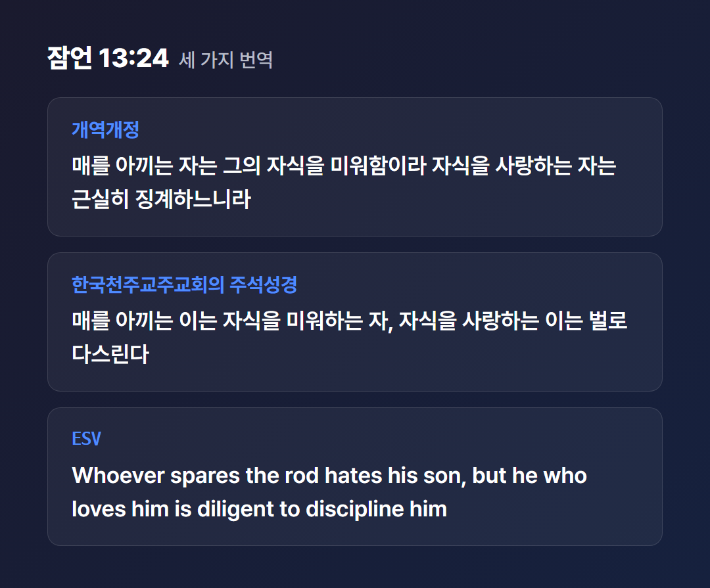
세 카드는 같은 구절의 번역 차이만 보여준다. 새번역이나 공동번역 같은 다른 한국어 번역본은 확인하지 못했다.
문맥을 보면, 앞뒤 구절(13:23, 13:25)은 가난한 자의 밭, 의인의 식사 등 다른 주제다. 13:24는 부모의 징계를 사랑의 표현으로 다루며 방임과 대비하는 격언이다. 아버지에게 하는 말로 풀이되지만, Wegner는 잠언 29:15를 설명하며 이 책임이 어머니만의 것은 아니라고 본다.
원어는 어떨까? ‘매(shebet)’를 BDB와 KB3는 막대, 지팡이, 몽둥이, 홀로 풀이한다. NIDOTTE(Fouts)는 시문학에서 가장 흔한 쓰임이 권위자가 쓰는 징계의 막대라고 설명한다. 아버지의 교정 징계(잠언 13:24; 22:15; 23:13, 14; 29:15), 관원의 처벌(10:13), 하나님(욥기 21:9; 37:13)의 경우가 그렇다.
같은 사전은 출애굽기 21:20, 미가 4:14, 이사야 10:15 등에서 이 낱말이 때리는 데 쓰였고, 비유적으로 이스라엘에 대한 하나님의 징계에도 쓰인다고 한다. ‘근실히’에 해당하는 낱말은 간절히, 일찍, 부지런히 구한다는 뜻이다. 호크마 주석은 어릴 때부터 때를 맞춰 징계한다는 뜻으로 풀었고, Geneva Bible은 ‘betimes’를 ‘diligently’로도 옮길 수 있다고 한다.
고전 주석은 이렇게 나뉜다. Benson은 마땅한 징계를 하지 않는 것이며 맹목적 애정은 미움만큼 해롭다고 했다. Matthew Henry Concise는 죄악된 습관을 허용하는 거짓된 방임을 표현한다고 설명했다.
Jamieson-Fausset-Brown은 징계, 곧 실제 도구를 암시한다고 보았다. Poole은 애정이 있어도 결과는 미움과 같다고 했고, Gill은 어리석은 사랑이 실제 미움보다 나쁘다고 했다. Keil & Delitzsch는 처벌 수단이자 아버지의 권위로 보았다.
그렇다면 오늘의 연구자들은 어떻게 읽을까? 소스에서 확인되는 입장은 두 갈래다. 한쪽은 이 낱말을 때리는 도구와 연결해 읽는다. Wegner(Phoenix Seminary 구약 교수, JETS 2005)는 shebet가 때리는 도구로 쓰인 낱말이며 잠언의 매 구절이 일종의 체벌을 시사한다고 본다.
같은 Wegner는 이 낱말이 단순한 엉덩이 때리기보다 넓은 징계를 가리키게 되었을 가능성도 말한다. 징계는 이전 단계가 먹히지 않을 때 쓰는 수준으로 보고, 분노나 악의로 쓰는 것은 해당하지 않는다고 본다. 교정이 말, 명령, 이성적 논증으로도 이루어진다는 취지의 주석도 그는 소개한다. 호크마 주석 역시 쉬브토를 징계를 위한 매, 막대기로 풀이한다.
다른 쪽은 성경이 체벌을 요구하지는 않는다는 입장이다. Christianity Today의 2012년 1월 사설은 William J. Webb의 책 Corporal Punishment in the Bible을 인용해, 성경이 체벌을 ‘요구’하지는 않지만 금하지도 않는다는 논지를 소개한다. 같은 사설은 Albert Mohler가 체벌을 불순종과 처벌의 인과를 보여주는 것으로 옹호한다고도 소개하고, 잔인함과 분노 없이 마지막 수단으로 하라는 자체 권고를 낸다.
두 입장은 자료 안에 함께 있다. 나는 어느 쪽도 판정하지 않는다.
이 주제에는 성경 해석과 성격이 다른 현대 자료도 있다. 한국에서는 법무부가 2020년 8월 4일 민법 제915조의 징계권 조항을 삭제하는 개정안을 입법예고했다. 삭제 대상은 ‘필요한 징계’ 조항과 감화·교정기관 위탁 규정이다. 법무부는 이 조항이 부모 체벌을 정당화한다고 오해되는 것을 막기 위한 것이라고 밝혔다.
리걸타임즈는 2021년 1월 8일 국회에서 이 개정안이 의결되었다고 보도했다. 시행일은 기사에서 확인하지 못했다.
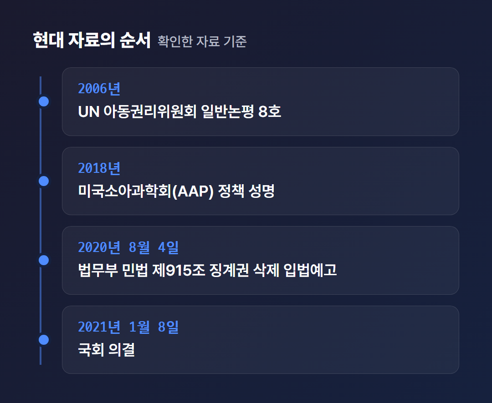
타임라인은 이 글이 확인한 현대 자료의 순서다. 국제 문서에서 UN 아동권리위원회는 2006년 일반논평 8호에서 체벌을 ‘아무리 가볍더라도 어느 정도의 고통이나 불편을 주려는 의도로 물리력을 쓰는 모든 처벌’로 정의했다. 같은 문서는 ‘합리적·온건한’ 체벌이 아동의 최선의 이익에 부합한다는 주장을 받아들이지 않는다고 쓴다.
미국소아과학회(AAP)는 2018년 정책 성명 “Effective Discipline to Raise Healthy Children”을 냈다. 이 성명에서 체벌이 효과가 없고 해롭다는 입장을 밝히고, 체벌 없이 긍정적 훈육 전략을 권했다. 이 내용은 HealthyChildren.org 기사로 확인했고, 정책 원문은 접근하지 못했다.
기독교 안의 논의와 이 자료들은 서로 성격이 다른 소스다. 이 글은 둘 사이의 우열이나 일치 여부를 따지지 않는다.
다섯 구절을 나란히 놓고 보니, 성경 자녀양육은 하나의 결론으로 묶이지 않는 곳이 여럿이었다. 아버지만 지목한 이유도, ‘마땅히 행할 길’도, ‘매’도 그렇다. 나는 그 갈림길에서 어느 쪽으로 가라고 말하지 않았다. 그럴 자격이 있는지 스스로도 확신하지 못한다.
다만 갈림길이 어디에 있는지는 보여주었기를 바란다. 내가 확인하지 못한 자료나 다른 번역본을 읽는 분은 다른 결론에 닿을 수도 있다. 그 가능성은 누구에게나 열려 있다.
2026년 5월 기준으로 자료를 정리한 글이다. 성경 본문은 오래된 것이라 발행 연도가 따로 없다. 본문을 인용할 때는 개역개정과 ESV(영어 번역본)를 구분해 적었다.
성경이 남편과 아내, 자녀에게 말하는 도리는 무엇일까? 이 질문을 검색창에 넣는 분들의 속마음은 대개 두 갈래일 것이다. 하나는 정확히 무엇이 적혀 있는지 알고 싶다는 마음이다. 다른 하나는 “아내에게 복종하라는 구절을 지금도 그대로 따라야 하는가?” 하는 걱정이다.
나는 이 글에서 구절부터 차례로 읽으려 한다. 남편, 아내, 자녀, 부모에게 각각 무엇이 명령되어 있는지 확인하는 일이 먼저다. 그다음에 해석이 갈리는 대목을 양쪽 입장 그대로 옮긴다. 어느 쪽이 옳은지는 이 글이 판정하지 않는다. 나에게 그럴 자격이 없기 때문이다.
TODO: 직접 경험 넣기 - 이 본문들을 처음 진지하게 읽게 된 계기나 가정에서 겪은 일, 있다면 2~3문장
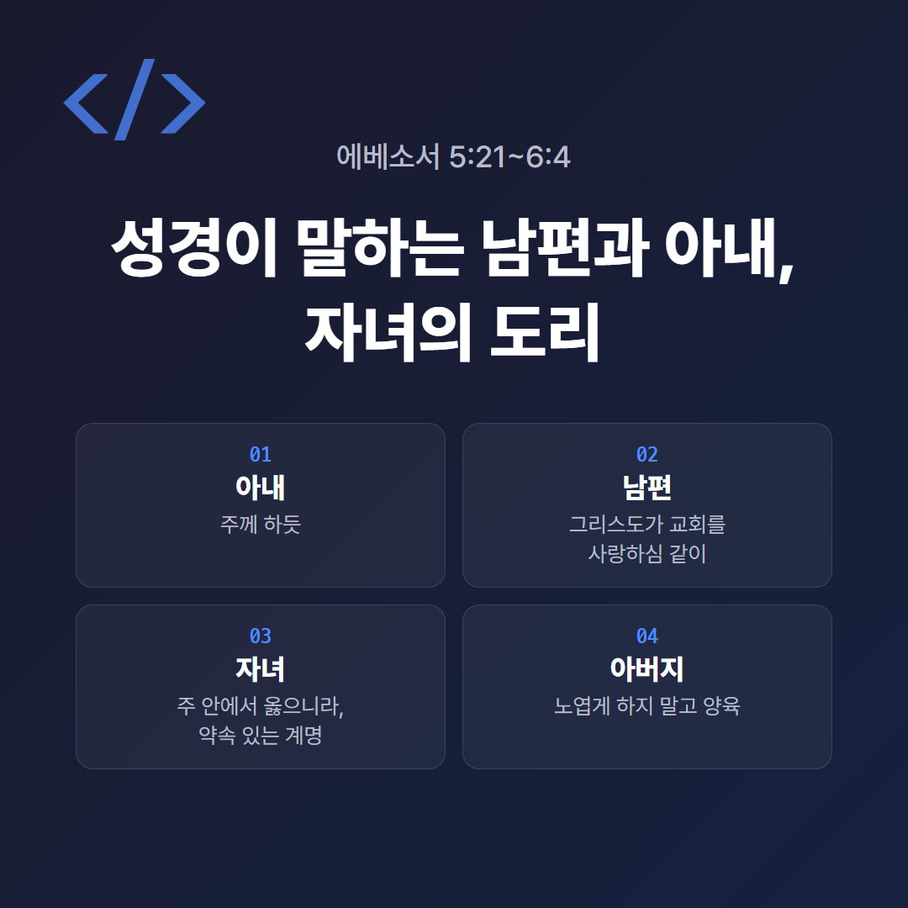
에베소서 5:21부터 6:4까지는 아내, 남편, 자녀, 아버지 순서로 이어진다. 그림의 네 칸이 그 순서다. 각 권면마다 이유가 붙어 있다는 점을 눈여겨볼 만하다.
가정의 도리는 성경 어디에 나올까?
핵심 본문은 세 곳이다. 에베소서 5:21~6:4, 골로새서 3:18~21, 베드로전서 3:1~7이다. 세 본문 모두 아내와 남편에게 각각 권면한다. 자녀와 아버지에게까지 말하는 곳은 에베소서와 골로새서다.
세 본문이 말하는 도리를 나란히 놓으면 대응 관계가 보인다.
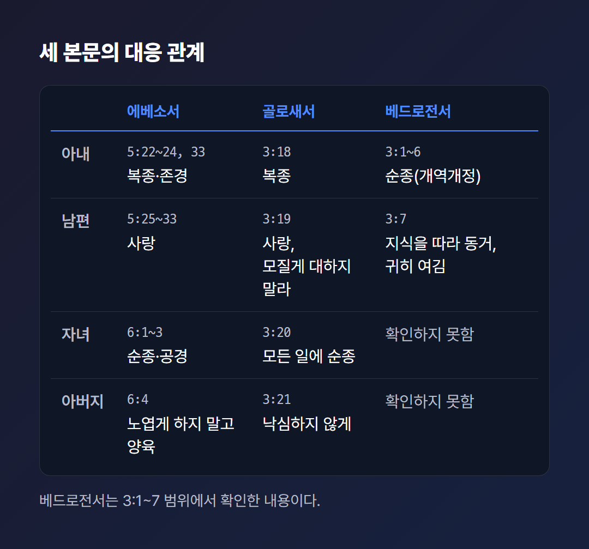
표에서 베드로전서의 자녀·아버지 칸이 비어 있는 것은 그 구절이 없어서가 아니다. 이번에 확인한 3:1~7 범위에서 자녀 관련 구절을 찾지 못했기 때문이다.
이 권면들의 바탕에는 결혼에 대한 서술이 있다. 창세기 2:18~24는 사람이 혼자 있는 것이 좋지 않아 돕는 짝(ESV: helper fit for him)을 만든다고 적고, 둘이 한 몸이 된다고 말한다. 이 구절을 어떻게 해석하느냐는 이 글에서 다루지 않는다.
남편의 도리는 무엇일까?
남편의 도리로 공통되게 명령된 것은 사랑이다. 에베소서 5:25~27은 그리스도가 교회를 사랑하고 자신을 내어준 것 같이 아내를 사랑하라고 한다. 개역개정 5:28은 “자기 아내 사랑하기를 자기 자신과 같이 할지니”라고 적는다.
골로새서 3:19는 사랑하되 모질게 대하지 말라고 한다. ESV로는 “do not be harsh with them”이다. 베드로전서 3:7은 “지식을 따라” 아내와 함께 살라고 한다. 아내를 귀히 여기라는 말도 붙는다. 그 이유로 기도가 막히지 않게 하려는 것이 언급된다.
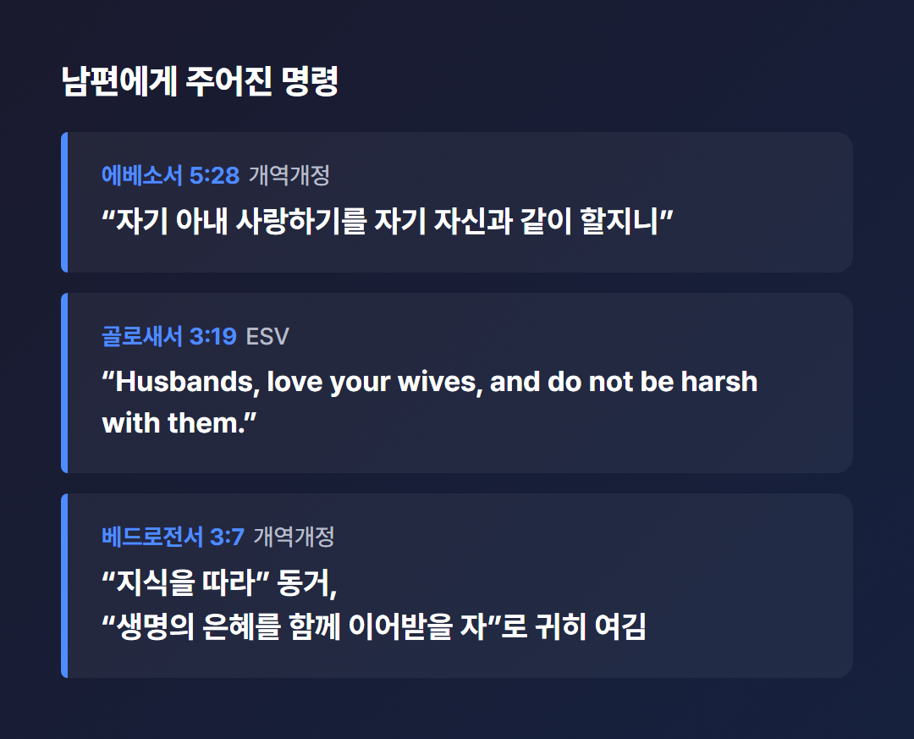
베드로전서 3:7은 아내를 “더 연약한 그릇”이라고 부르는 동시에 “생명의 은혜를 함께 이어받을 자”라고 적는다. 그 두 표현을 어떻게 함께 읽는지는 내가 확인한 자료에서 다루지 않았다.
남편의 도리인 이 사랑은 어떤 사랑일까? 한 개인 저자 주석(데이비드 구직)은 골로새서 3:19의 사랑을 희생적이고 자기를 부인하는 사랑으로 설명한다. 아내가 빌미를 주어도 쓰라림을 품지 말라는 뜻으로 읽는다. 옛 주석인 매튜 헨리는 그리스도의 사랑처럼 지속적이고 자기를 내어주는 사랑이라고 풀며 위로·보호·부양을 언급한다.
에베소서에서 남편에게 준 지면은 눈에 띈다. 아내에게 준 말보다 5:25~33의 남편 사랑에 대한 서술이 훨씬 길다. 그래서 “남편에게 명령된 것이 더 무겁지 않은가?”라는 질문이 나오기도 한다. 본문이 명령한 내용을 나란히 놓을 수는 있다. 무게를 저울에 다는 일은 읽는 이에게 남겨 둔다.
아내의 도리는 무엇일까?
아내의 도리로 명령된 것은 복종(또는 순종)과 존경이다. 개역개정 에베소서 5:22~24는 아내가 자기 남편에게 “주께 하듯” 복종하라고 한다. 이유로는 남편이 아내의 머리 됨이 그리스도가 교회의 머리 됨과 같다는 점을 든다. 5:33에서는 아내가 남편을 존경하라고 말한다(ESV: respect).
골로새서 3:18은 “주 안에서 합당하니라”로 끝난다. 구직은 이 말이 복종의 동기를 정하는 것이지 범위를 정하는 것은 아니라고 설명한다. 베드로전서 3:1~6은 아내에게 순종을 말하고, 외모의 단장보다 “마음에 숨은 사람”의 온유하고 안정한 심령이 하나님 앞에 값지다고 한다. 본보기로는 사라가 나온다.
같은 ‘복종’이라 해도 번역어는 조금씩 다르다.
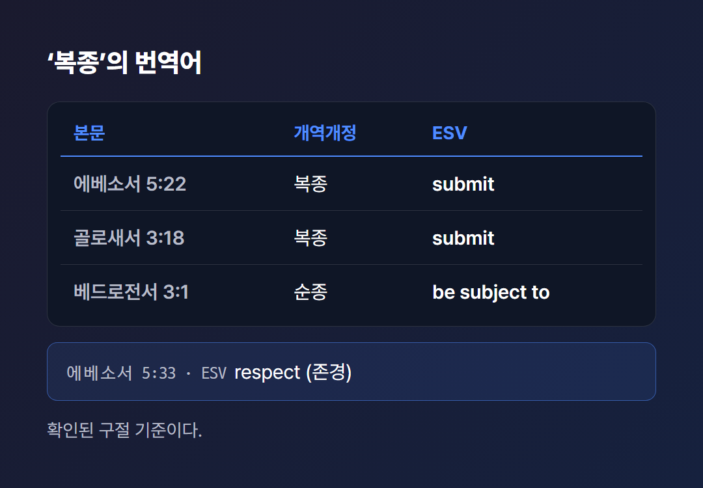
개역개정은 에베소서와 골로새서에서 ‘복종’, 베드로전서에서 ‘순종’으로 옮긴다. ESV는 submit 또는 be subject to를 쓴다. 이 차이가 무엇을 뜻하는지는 뒤에서 다시 다룬다.
지혜문학에도 아내에 대한 말이 있다. 잠언 31:10~12는 현숙한 아내를 귀하다고 하고, 남편이 그를 신뢰한다고 적는다. 반대로 잠언 21:9와 19:13은 다투는 아내를 지붕 모퉁이나 끊임없이 떨어지는 물방울에 견준다.
자녀와 부모의 도리는 무엇일까?
자녀의 도리는 부모에 대한 순종과 공경이다. 아버지의 도리는 자녀를 노엽게 하지 않고 양육하는 일이다. 에베소서 6:1~3(ESV)은 자녀가 “in the Lord” 부모에게 순종하라고 하며, 십계명 5계명인 출애굽기 20:12를 인용한다. 그 계명에는 잘되고 땅에서 장수한다는 약속이 붙는다.
골로새서 3:20(ESV)은 모든 일에 부모에게 순종하라고 하고, 그것이 주를 기쁘시게 한다고 덧붙인다. 잠언 1:8은 아들에게 아버지의 훈계를 들으라고 한다. 구직은 이 순종이 저절로 생기지 않고 가르쳐야 한다고 설명한다. 성인이 된 자녀에게는 순종의 의무는 없어도 공경의 의무는 남는다고 본다. 이는 해석적 견해다.
자녀의 도리에 관해 한 가지는 솔직히 밝혀야 한다. 자녀의 순종이 어디까지 미치는가는 이번에 확인한 자료에 없었다. 죄를 요구하는 명령을 받으면 어떻게 하느냐는 물음에 내가 답할 근거를 갖지 못했다. “주 안에서”와 “모든 일에”라는 두 표현이 어떻게 함께 읽히는지도 마찬가지다.
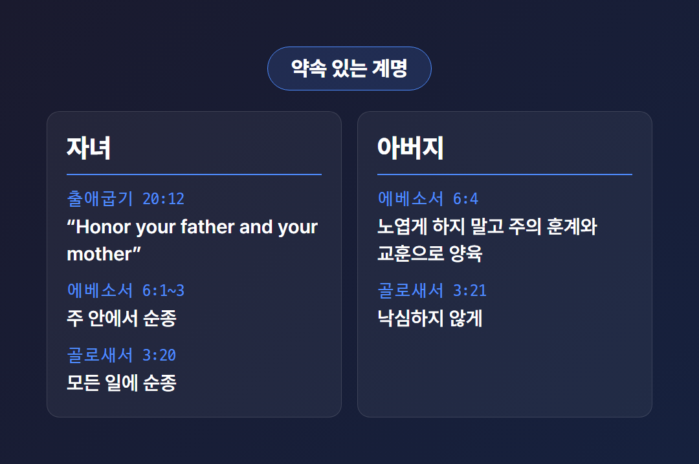
아버지의 도리는 어떻게 적혀 있을까? 에베소서 6:4(ESV)는 자녀를 노엽게 하지 말고 “discipline and instruction of the Lord”로 기르라고 한다. 골로새서 3:21(ESV)은 자녀가 낙심하지 않도록 노엽게 하지 말라고 한다. 구직은 부권이 절대적이던 사회에서 “자녀의 감정이 고려되어야 한다”는 점이 새롭다고 본다. 자녀의 잘못된 행동이 부모 때문에 생길 수도 있다는 해설도 덧붙인다.
부모의 도리인 양육의 바탕은 신명기 6:4~7에서 볼 수 있다. 말씀을 자녀에게 부지런히 가르치고, 일상 속에서 이야기하라는 것이다. 잠언 22:6은 마땅히 행할 길을 아이에게 가르치라고 한다. 잠언 13:24는 매를 아끼는 자는 아들을 미워하는 자라고 말한다. 이 구절의 ‘징계’를 오늘 어떻게 적용할지는 이번 조사에서 확인하지 못했다. 아는 척하지 않는 편이 낫다.
TODO: 직접 경험 넣기 - 자녀를 기르거나 부모를 대하며 이 본문을 마주했던 경험, 있다면 2~3문장
복종이라는 도리는 왜 해석이 갈릴까?
쟁점은 크게 셋이다. 에베소서 5:21과 5:22의 관계, ‘머리’의 뜻, 그리고 복종·순종이라는 번역어와 그 한계다. 세 쟁점 모두 성경을 존중하는 사람들 사이에서 입장이 나뉜다. 여기서는 확인한 자료에 나온 주장을 그대로 옮긴다.
먼저 5:21 “그리스도를 경외함으로 피차 복종하라”와 5:22의 관계다. 긴 편지에서 한 문장만 오려 내 읽으면 뜻이 달라질 수 있다. 그렇다면 5:22는 5:21과 함께 읽어야 할까? 양쪽이 모두 그렇게 말한다. 다만 함께 읽은 결과가 다르다. 물론 이 비유는 관계 자체가 쟁점이라는 사실을 가려 주지 못한다.
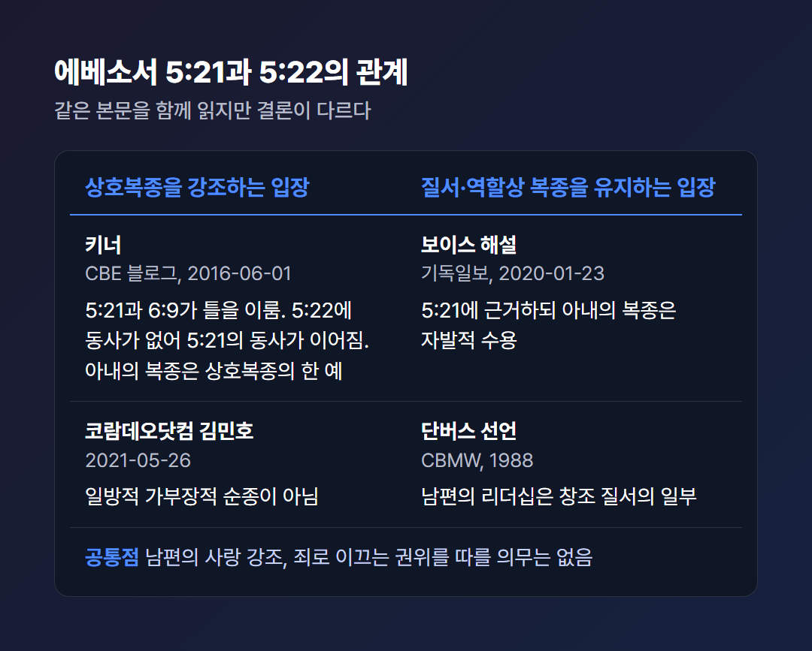
표의 왼쪽 입장은 이렇다. 키너는 5:21과 6:9가 틀을 이루고, 그리스어 5:22에 동사가 없어 5:21의 동사가 이어진다고 본다. 그래서 아내의 복종은 상호복종의 한 예라는 것이다. 한국 목회자 기고(코람데오닷컴)도 남편과 아내가 그리스도를 중심으로 서로 복종하는 관계로 읽고, 일방적인 가부장적 순종은 아니라고 한다.
오른쪽 입장은 다르다. 기독일보가 소개한 보이스의 해설은 복종이 5:21 “피차 복종”에 근거해야 한다고 하면서도, 아내의 복종은 자발적 수용에 기초하며 결혼하는 이는 남편의 머리됨에 동의한 것이라고 정리한다. 단버스 선언은 남편의 리더십이 타락 이전 창조 질서의 일부라고 한다. 동시에 남편은 harsh or selfish leadership을 버려야 하고, 아내는 “willing, joyful submission”으로 자라야 한다고 말한다. 두 입장은 서로 다른 자료에서 나왔고, 나는 그 사이에서 결론을 내리지 않는다.
다음은 ‘머리’(그리스어 kephalē)의 뜻이다. 이 단어의 뜻이 권위인지 근원인지를 두고 학계 논쟁이 있다. 확인한 메타연구는 그루뎀을 ‘권위’ 뜻의 주요 옹호자로, 스크록스와 빌레지키언을 ‘근원’ 쪽으로 소개한다. 그루뎀 쪽은 권위라는 뜻이 이미 자리 잡은 의미라고 주장한다. Groothuis(Groothuis)도 ‘머리’가 권위가 아니라 기원 또는 생명의 근원을 가리킨다고 주장한다.
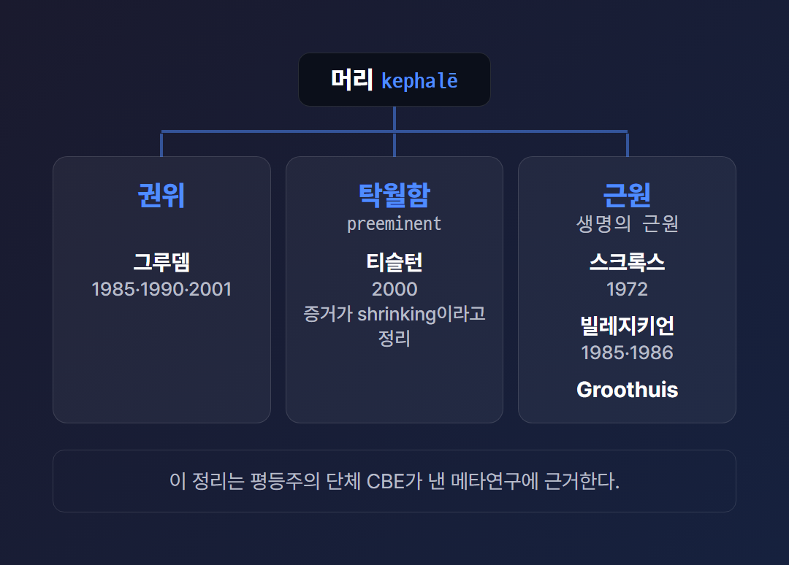
세 갈래를 한 장에 그렸다. 메타연구는 티슬턴의 정리를 소개하며 양쪽 증거가 약해졌고 ‘탁월함’이 절충 뜻일 수 있다고 정리한다. 이 메타연구는 평등주의 단체 CBE가 낸 글이다. 그 점을 감안하고 읽어야 한다. 한국어 자료인 매튜 헨리 해설은 남편을 머리 자리에 있는 이로 보되, 그 복종은 사랑과 존경에서 나온 것이며 강압이 아니라고 설명한다.
마지막은 번역어와 한계다. Groothuis은 아내에게 복종하라 했지 남편에게 ‘순종(obey)’하라고 하지는 않았다고 주장한다. 한편 개역개정 베드로전서 3장은 “순종하라”로 옮긴다. 번역어가 다르다는 사실만 기록해 둔다. 원어를 어떻게 읽어야 하는지는 나도 판정하지 않는다.
한계에 대해서는 양쪽이 비슷한 말을 한다. 단버스 선언은 어떤 복종도 죄를 따르라는 뜻은 아니라고 밝힌다. 코람데오 기고는 아내의 순종이 그리스도 경외로 이어질 때 성립한다고 본다. 한편 구직은 남편의 장점 여부와 관계없이 아내의 복종이 그리스도인의 삶의 일부라고 본다. 세 문장의 강조점은 같지 않다.
갈라디아서 3:28(ESV)은 “there is no male and female, for you are all one in Christ Jesus”라고 말한다. 이 구절과 가정 규범의 관계를 양쪽이 어떻게 해석하는지는 확인한 자료에서 직접 다뤄지지 않았다. 다만 단버스 선언은 남녀가 구원의 복을 동등하게 공유한다고 밝힌다.
부부가 서로의 도리를 함께 말하는 본문도 있다. 고린도전서 7:3~5(ESV)에서 남편은 아내에게 부부 관계의 의무를 다한다. 아내는 자기 몸에 대한 권한이 없고 남편이 있다고 말한 뒤, 같은 논리가 남편에게도 적용된다. 이 본문은 서로 자기 몸에 대한 권한이 있다는 말이다. 합의하여 기도에 전념하는 한시적 예외도 언급된다.
성경이 남편과 아내, 자녀에게 말하는 도리를 읽고 나면 남는 물음이 하나 있다. 그대는 이 구절들을 배우자에게 내밀 목록으로 읽고 있는가, 아니면 자기 몫으로 받을 명령으로 읽고 있는가?
이 글은 어느 입장이 맞다고 알려 준 게 아니라, 각 입장이 무엇을 근거로 삼는지 보여 준 것이다. 그 정도가 내가 할 수 있는 몫이었다.
내 정리에는 빠진 것이 있을 것이다. 본문은 일부만 요약 형태로 확인했고, 양쪽 원저작은 직접 읽지 못했다. 그러니 그대가 직접 본문을 펼치고, 양쪽 자료를 견주어 보기를 바란다. 남편과 아내, 자녀의 도리를 다시 묻는 자리가 그대의 가정에서 조금은 더 차분해지면 좋겠다.